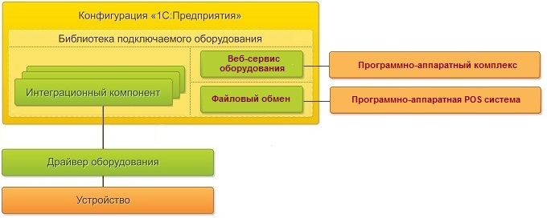
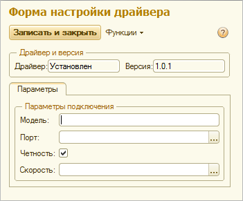
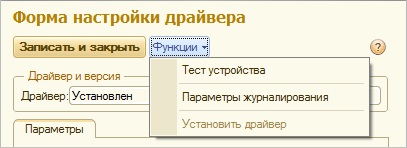
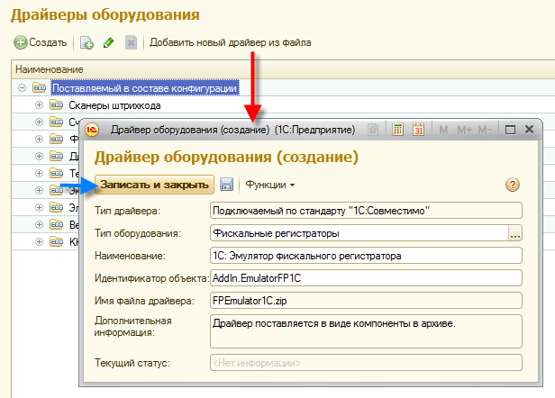

20.09.2018
Данный стандарт поддерживается в "1С:Библиотека подключаемого оборудования" начиная с версии 2.0.6.
| Версия | Раздел | Изменения |
|---|---|---|
|
2.4 |
Требования к разработке драйверов для ККТ с функцией передачи в ОФД | Добавлена поддержка ставок НДС 20% и 20/120. Добавлена поддержка дополнительных реквизитов чека и чека коррекции. Определена структура кода товарной номенклатуры. |
| 2.3 | Требования к разработке драйверов для терминалов сбора данных | В таблицу выгружаемых и загружаемых данных добавлено поле "ContainerBarcode" (штрихкод упаковки). |
| 2.3 | Требования к разработке драйверов для принтеров этикеток | Добавлены новые поддерживаемые тип штрихкодов: "EAN13Addon2","EAN13Addon5","GS1DataBarExpandedStacked" |
| 2.3 | Подключение программно-аппаратных комплексов с помощью файлового обмена | Изменен раздел. |
| 2.3 | Подключение программно-аппаратных комплексов с помощью web-сервиса "EquipmentService" | Изменен раздел. |
| 2.2 | Требования к разработке драйверов для ККТ с функцией передачи в ОФД | Изменен раздел. Данный стандарт определяет требования к ККТ на основании форматов фискальных документов версии «1.0»,«1.0.5». |
| 2.1 | Требования к разработке драйверов для ККТ с функцией передачи в ОФД | Добавлен новый метод НапечататьОтчетБезГашения (PrintXReport). Изменены параметры метода СформироватьЧек (ProcessCheck) в структуре CheckPackage добавлен атрибут Department и изменен параметр Tax(указание ставок НДС в явном виде, в том числе БЕЗ НДС) |
| 2.0 | Требования к разработке драйверов для ККТ с функцией передачи в ОФД | Новый раздел. Данный стандарт определяет требования к ККТ на основании форматов фискальных документов версии «1.0» |
| 2.0 | Требования к разработке драйверов для принтеров чеков | Изменен механизм печати документов с построчного на пакетный режим. |
| 1.6 | Требования к разработке драйверов для RFID считывателей | Новый раздел. |
| 1.6 | Требования к разработке драйверов для терминалов сбора данных | Добавлена возможность обмена атрибутами алкогольной продукции для поддержки работы ЕГАИС. |
| 1.6 | Подключение программно-аппаратных POS-систем в режиме "OFFLINE" с помощью файлового обмена | Добавлено разделение данных по пакетам с поддержкой предыдущих форматов с помощью механизма определения версии пакета. Добавлена возможность обмена атрибутами алкогольной продукции для поддержки работы ЕГАИС. |
| 1.6 | Подключение программно-аппаратных комплексов с помощью Веб-сервиса оборудования | Добавлено разделение данных по пакетам с поддержкой предыдущих форматов с помощью механизма определения версии пакета. Добавлена возможность обмена атрибутами алкогольной продукции для поддержки работы ЕГАИС. |
| 1.5 | Требования к разработке драйверов для фискальных регистраторов | Добавлена возможность печати штрихкода типа "QR". |
| 1.5 | Требования к разработке драйверов для принтеров чеков | Добавлена возможность печати штрихкода типа "QR". |
| 1.5 | Подключение программно-аппаратных POS систем в режиме "OFFLINE" с помощью файлового обмена | В структуру выгружаемой таблице товаров ТаблицаТоваров (GoodsTable) добавлен флаг "FullLoad". |
| 1.4 | Требования к разработке драйверов для принтеров этикеток | Новый раздел. |
| 1.4 | Подключение программно-аппаратных комплексов с помощью Веб-сервиса оборудования | Новый раздел. |
| 1.4 | Подключение программно-аппаратных POS систем в режиме "OFFLINE" с помощью файлового обмена | Новый раздел. |
| 1.3 | Требования к разработке драйверов для принтеров чеков | Новый раздел. |
| 1.3 | Подключение драйверов разработанных по стандарту «1С: Совместимо» к конфигурации БПО | Новый раздел. |
| 1.3 | Требования к разработке драйверов для фискальных регистраторов | Добавлен новый метод "ОткрытьСмену". |
| 1.2 | Общие требования к разрабатываемому драйверу и его архитектуре | - Добавлены рекомендации по разработке архитектуры драйвера. - Дополнен пункт 4. - Добавлен пункт 10. |
| 1.2 | Обязательные функции и методы, связанные с использованием драйвера подключаемого оборудования в системе | Добавлены новые атрибуты для таблицы параметров: "ТолькоПросмотр", "Описание". |
| 1.2 | Требования к разработке драйверов для электронных весов с печатью этикеток в режиме "OFFLINE" | В метод ВыгрузитьТовары (UploadGoods) добавлен параметр "СтатусПакета" |
| 1.2 | Требования к разработке драйверов для терминалов сбора данных | В метод ВыгрузитьТаблицу (UploadTable) добавлен параметр "СтатусПакета" |
| 1.2 | Требования к разработке драйверов для эквайринговых терминалов | Добавлены рекомендации по реализации печати нескольких слип-чеков. |
| 1.1 | Обязательные функции и методы, связанные с использованием драйвера подключаемого оборудования в системе | - Для метода "ПолучитьОписание" добавлены дополнительные параметры "ИнтеграционнаяБиблиотека", "ОсновнойДрайверУстановлен" - Добавлены методы "ПолучитьДополнительныеДействия", "ВыполнитьДополнительноеДействие" |
| 1.1 | Требования к разработке драйверов для эквайринговых терминалов | - Для методов, отвечающих за работу с экваринговыми операциями, добавлен параметр "НомерЧека" - Добавлена функция "ПечатьКвитанцийНаТерминале" |
Для подключение оборудования к автоматизированным системам на
платформе «1С:Предприятие» используется "1С:Библиотека подключаемого
оборудования". Библиотека предоставляет набор высокоуровневых механизмов
для унифицированной работы с подключаемым оборудованием. Применение
данной библиотеки позволяет ускорить реализацию поддержки широкого
спектра моделей подключаемого оборудования в разрабатываемых
конфигурациях, а также добавить готовые функциональные блоки в уже
работающие прикладные решения.
Подключение оборудования к
локальному рабочему месту осуществляется с помощь специально
разработанного драйвера. Требования к таким драйверам подключаемого
оборудования описывают единые методы используемые как конфигурацией
"1С:Библиотека подключаемого оборудования", так и драйвером
оборудования. Конфигурация "1С:Библиотека подключаемого оборудования"
непосредственно взаимодействует с драйверами оборудования используя
стандартные команды, за счет чего достигается стандартный результат.
Поддерживается
взаимодействие с программно-аппаратными POS-системами (от англ. "Point
of Sale" - "Точка продаж") обеспечивающих розничные продажи.
Взаимодействие обеспечивается с помощью файлового обмена с помощью
встроенного в библиотеку модуля "1С: ККМ-Offline".
Библиотека
поддерживает работу сторонних программно-аппаратных комплексов
различного назначения с помощью Веб-сервиса оборудования. Для
осуществления обмена необходимо опубликовать Веб-сервис "EquipmentService" входящий
в состав библиотеки. Веб-сервис обрабатывает запросы на получение и
обработку данных от программно-аппаратных комплексов и возвращает
стандартный результат во внешний программно-аппаратный комплекс.

Рис. 1. Схемы взаимодействия конфигураций системы программ «1С:Предприятие» с подключаемым оборудованием
Общую структуру документа можно разделить на две части: требования к разработке драйвера для подключения оборудования к локальному рабочему месту и подключение аппаратно-программных систем с помощью веб-сервиса оборудования.
Оборудование подключается к системе с помощью драйвера, разработанного по технологии создания внешних компонент. Технология определяет интерфейс взаимодействия между платформой и драйвером. Реализация драйвера возможна по технологии создания внешних компонент с использованием стандартных компонентных объектов для Windows (COM-интерфейс) и собственной технологии фирмы 1С – NativeAPI (динамическая библиотека для Windows или Linux). С помощью технологии NativeAPI можно создавать внешние компоненты, которые могут подключаться как в клиентском приложении, так и на сервере "1С:Предприятия", в том числе и в версиях для Linux.
Интерфейс внешней компоненты можно условно разделить на несколько частей:
Разрабатываемый драйвер должен:
При разработке драйвера можно использовать несколько архитектурных решений:
ВНИМАНИЕ: Для типа оборудования "Дисплей покупателя", "Устройства ввода", "Принтеры чеков", "Терминал сбора данных", "Электронные весы" допускается разработка драйвера в однокомпонентной архитектуре. Для других типов оборудования необходимо использовать многокомпонентную архитектуру!
Данный раздел содержит список обязательных функций и методов, связанных с использованием драйвера подключаемого оборудования в системе – его подключение и настройка, получение описания, тестирование и обслуживание ошибок.
Драйвер поддерживает два основных этапа работы с оборудованием в конфигурации:
Регистрация и настройка оборудования
Использование оборудования пользователем в процессе работы
ВНИМАНИЕ: Все значения интерфейсных элементов (наименование, описание, заголовки, сообщения) должны быть реализованы на языке, установленном кодом локализации. (см. п.10 раздела Общие требования к разрабатываемому драйверу и его архитектуре.)
| Описание методов | |||||
|---|---|---|---|---|---|
| Название (alias) | Параметры | Тип возвращаемого значения | Описание метода | ||
| Имя | Тип | Описание | |||
| ПолучитьНомерВерсии (GetVersion) |
- |
- |
- |
STRING |
Возвращает номер версии драйвера. |
| ПолучитьОписание (GetDescription) | Наименование (Name) | STRING [OUT] | Наименование драйвера |
BOOL |
Возвращает информацию о драйвере, такую как название и описание, поддерживаемый тип оборудования. |
| Описание (Description) | STRING [OUT] | Описание драйвера | |||
| ТипОборудования (EquipmentType) | STRING [OUT] | Строка, определяющая тип оборудования* | |||
| РевизияИнтерфейса (InterfaceRevision) | LONG [OUT] | Поддерживаемая версия требований** для данного типа оборудования | |||
| ИнтеграционнаяБиблиотека (IntegrationLibrary) |
BOOL [OUT] | Флаг возвращает, является ли компонент интеграционной библиотекой драйвера или самостоятельным драйвером | |||
| ОсновнойДрайверУстановлен (MainDriverInstalled) |
BOOL [OUT] | Для интеграционной библиотеки возвращает флаг установки основной поставки драйвера | |||
| URLCкачивания (DownloadURL) |
STRING [OUT] | Возвращает пустую строку или адрес страницы сайта производителя, по которому доступна ссылка для скачивания основной поставки драйвера или иная информация о драйвере. При возвращении пустой строки функционал установки основной поставки драйвера не активизируется. | |||
| ПолучитьОшибку (GetLastError) | ОписаниеОшибки (ErrorDescription) |
STRING [OUT] |
Описание ошибки |
LONG |
Возвращает код и описание последней произошедшей ошибки. |
| ПолучитьПараметры (GetParameters) | ТаблицаПараметров (TableParameters) XML таблица |
STRING [OUT] |
Список параметров |
BOOL |
Возвращает список параметров настройки драйвера и их типы, значения по умолчанию и возможные значения. |
| УстановитьПараметр (SetParameter) | Имя (Name) |
STRING [IN] |
Имя параметра |
BOOL |
Установка значения параметра по имени |
| Значение (Value) |
VARIANT [IN] |
Значение параметра | |||
| Подключить (Open) | ИДУстройства (DeviceID) |
STRING [OUT] |
Идентификатор устройства |
BOOL |
Подключает оборудование с текущими значениями параметров, установленных функцией «УстановитьПараметр». Возвращает идентификатор подключенного экземпляра устройства |
| Отключить (Close) | ИДУстройства (DeviceID) | STRING [IN] | Идентификатор устройства |
BOOL |
Отключает оборудование |
| ТестУстройства (DeviceTest) | Описание (Description) | STRING [OUT] | Описание результата выполнения теста |
BOOL |
Выполняет пробное подключение и опрос устройства с текущими значениями параметров, установленными функцией «УстановитьПараметр». При успешном выполнении подключения в описании возвращается информация об устройстве |
| АктивированДемоРежим (DemoModeIsActivated) | STRING [OUT] | Возвращает описание ограничений демонстрационного режима при его наличии и пустой результат при его отсутствии. Пример: драйвер является платным, и для полноценной работы нужен ключ защиты. | |||
| ПолучитьДополнительныеДействия (GetAdditionalActions) | ТаблицаДействий (TableActions) XML таблица |
STRING [OUT] |
Список дополнительных действий |
BOOL |
Получает список действий, которые будут отображаться как дополнительные пункты меню в форме настройки оборудования, доступной администратору. Если действий не предусмотрено, возвращает пустую строку. |
| ВыполнитьДополнительноеДействие (DoAdditionalAction) | ИмяДействия (ActionName) | STRING [IN] | Имя действия |
BOOL |
Команда на выполнение дополнительного действия с определенными именем |
*
- Строка, определяющая тип оборудования, имеет одно из значений:
“СканерШтрихкода“, “СчитывательМагнитныхКарт“, “ФискальныйРегистратор“,
“ПринтерЧеков“, “ПринтерЭтикеток“, “ДисплейПокупателя“,
“ТерминалСбораДанных“, “ЭквайринговыйТерминал“, “ЭлектронныеВесы“,
“ВесыСПечатьюЭтикеток“, “СчитывательRFID“, “ККТ“.
** - Версия
требований – версия текущего документа (Версии 1.00 соответствует
число 1000. Версии 1.2 соответствует число 1002. Текущей версии 2.4 соответствует число 2004.
Текст в формате XML, передаваемый с помощью параметра типа STRING. Содержит описание всех параметров драйвера и описание визуального интерфейса настройки драйвера.
Необходимые для работы параметры могут быть структурированы для вывода на форму конфигурации "1С:Предприятия" - распределены по закладкам и группам на закладке. Закладки и группы могут иметь наименования, которые отобразятся на форме. Для параметров могут быть заданы определенные значения, которые сформируют выпадающий список для выбора. Наконец, поля параметров, зависимых от других параметров, могут активироваться по необходимости.
| Наименование атрибута | Обязательное наличие в структуре | Типы данных | Описание атрибута |
|---|---|---|---|
| Name | Да | string | Имя параметра, для которого создается поле ввода, не должно содержать пробелов и недопустимых символов (в соответствии с правилами формирования имен объектов "1С:Предприятия") и быть уникальным в рамках таблицы параметров |
| Caption | Да | string | Произвольная надпись перед полем ввода |
| Description | Нет | string | Описание параметра. Справочная информация выводимая в выпадающей подсказке. |
| TypeValue | Да | string | Одно из нижеуказанных типов данных: “String“, “Number“, “Boolean” |
| FieldFormat | Нет | string | Строка форматирования значения параметра |
| DefaultValue | Нет | string | Значение параметра по умолчанию |
| ReadOnly | Нет | boolean | Параметр только для просмотра |
| ChoiceList | Нет | list | Содержит список доступных для выбора значений параметра |
| PageCaption | Нет | string | Наименование закладки, по которому будут группироваться поля ввода |
| GroupCaption | Нет | string | Наименование группы, по которому будут группироваться поля ввода |
Пример текстового XML описывающего параметры драйвера:
Копировать в буфер обмена <?xml version="1.0" encoding="UTF-8" ?>
<Settings>
<Page Caption="Параметры">
<Group Caption="Параметры подключения">
<Parameter Name="Model" Caption="Модель" TypeValue="Number"/>
<Parameter Name="Port" Caption="Порт" TypeValue="Number" DefaultValue="0">
<ChoiceList>
<Item Value="0">Клавиатура</Item>
<Item Value="1">COM1</Item>
<Item Value="2">COM2</Item>
</ChoiceList>
</Parameter>
<Parameter Name="Parity" Caption="Четность" TypeValue="Boolean" DefaultValue="true"/>
<Parameter Name="Speed" Caption="Скорость" TypeValue="Number" DefaultValue="1"/>
</Group>
</Page>
</Settings>
В результате будет сформирована следующая форма для ввода параметров:

Текст в формате XML, передаваемый с помощью параметра типа STRING.
Содержит описание дополнительных действий для настройки и управления
драйвером в форме настройке оборудования, доступной администратору.
Данные
действия будут отображаться пунктами меню в разделе "Функции", после
пункта меню "Тест устройства" на форме настройки экземпляра
подключаемого оборудования. При выборе определенного пункта меню будет
вызван метод драйвера "ВыполнитьДополнительноеДействие" с параметром
"ИмяДействия", соответствующий данному пункту меню. При выполнении
данного действия драйвер может создавать дополнительные диалоговые окна в
соответствии с документом "Технология создания внешних компонент".
| Секция | Наименование атрибута | Обязательное наличие в структуре | Типы данных | Описание атрибута |
|---|---|---|---|---|
| Actions | Да | Пользовательские действия. | ||
|
Action |
Name | Да | string | Имя действия, для которого создается пункт меню, не должно содержать пробелов и недопустимых символов (в соответствии с правилами формирования имен объектов "1С:Предприятия") и быть уникальным в рамках таблицы параметров |
| Caption | Да | string | Заголовок пункта меню | |
Пример текстового XML описывающего дополнительные действия:
Копировать в буфер обмена <?xml version="1.0" encoding="UTF-8" ?>
<Actions>
<Action Name="SettingLog" Caption="Параметры журналирования"/>
</Actions>
В результате будут сформированы следующие пункты меню для формы для ввода параметров:

Конфигурациями поддерживаются следующие возможности работы с весами on-line:
| Описание методов | |||||
|---|---|---|---|---|---|
| Название (alias) | Параметры | Тип возвращаемого значения | Описание метода | ||
| Имя | Тип | Описание | |||
| УстановитьВесТары (Calibrate) | ИДУстройства (DeviceID) |
STRING [IN] |
Идентификатор устройства |
BOOL |
Производит установку веса тары на весах. Если значение «ВесТары» имеет значение 0 – в качестве значения принимается текущее значение веса на весах. |
| ВесТары (TareWeight) |
DOUBLE [IN] |
Вес тары | |||
| ПолучитьВес (GetWeight) | ИДУстройства (DeviceID) |
STRING [IN] |
Идентификатор устройства |
BOOL |
Получает текущий вес товара на весах. |
| ТекущийВес (Weight) |
DOUBLE [OUT] |
Текущий вес товара на весах | |||
Работа с электронными весами с печатью этикеток заключается в выгрузке таблицы товаров. Таблица формируется на основе базы данных средствами конфигурации. Обработка выгрузки таблицы товаров в электронные весы должна предусматривать выгрузку несколькими итерациями путем последовательных вызовов метода «ВыгрузитьТовары (UploadGoods)» с пакетами данных определенного размера (например, по 100 записей) с дополнительным параметром, определяющим статус пакета ("first" - первый пакет, "regular" - очередной, "last" - последний пакет).
| Описание методов | |||||
|---|---|---|---|---|---|
| Название (alias) | Параметры | Тип возвращаемого значения | Описание метода | ||
| Имя | Тип | Описание | |||
| ВыгрузитьТовары (UploadGoods) | ИДУстройства (DeviceID) |
STRING [IN] |
Идентификатор устройства |
BOOL |
Выгружает товары в весы |
| ТаблицаТоваров (GoodsTable) XML таблица |
STRING [IN] |
Таблица товаров | |||
| СтатусПакета (PackageStatus) |
STRING [IN] |
Статус пакета * | |||
| ОчиститьТовары (ClearGoods) | ИДУстройства (DeviceID) |
STRING [IN] |
Идентификатор устройства |
BOOL |
Удаляет ранее загруженные товары в весах |
* - Строка, определяющая статус пакета, имеет одно из значений: "first", "regular", "last".
Текст в формате XML, передаваемый с помощью параметра типа STRING.
| Секция | Наименование атрибута | Обязательное наличие в структуре | Типы данных | Описание атрибута |
|---|---|---|---|---|
| Table | Да | Таблица товаров | ||
|
Record |
PLU | Да | long | PLU товара (Индекс товара в весах) |
| Code | Да | long | Код весового товара | |
| IsWeightGoods | Да | boolean | Флаг весового товара. По умолчанию true. Если false – то это штучный товар фасуемый на весах. | |
| Name | Да | string | Наименование товара | |
| Price | Да | decimal | Цена за килограмм | |
| Description | Нет | string | Текстовое описание товара (состав товара, список ингредиентов и пр.) | |
| ShelfLife | Нет | long | Длительность хранения/срок годности товара, в днях | |
Пример текстового XML, содержащий данные:
Копировать в буфер обмена
<?xml version="1.0" encoding="UTF-8"?>
<Table>
<Record PLU="1" Code="1003" Name="Яблоки Антоновка" Price="95,50" ShelfLife="7" IsWeightGoods="true"/>
<Record PLU="2" Code="1023" Name="Салат Болгарский" Price="500,00" IsWeightGoods="true"
Description="Состав: свекла, морковь, ветчина, мясо, сыр, яйцо, лук репчатый, майонез" ShelfLife="5"/>
</Table>
При оформлении документов продажи необходимая информация может отображаться на дисплее покупателя. Состав информации определяется в конфигурации. Поддерживаются многострочные дисплеи и разбиение строк на области.
| Описание методов | |||||
|---|---|---|---|---|---|
| Название (alias) | Параметры | Тип возвращаемого значения | Описание метода | ||
| Имя | Тип | Описание | |||
| ВывестиСтрокуНаДисплейПокупателя (StringOutputOnCustomerDisplay) | ИДУстройства (DeviceID) |
STRING [IN] |
Идентификатор устройства |
BOOL |
Выводит переданные строки на дисплей покупателя. Одна строка соответствует одной строке дисплея. Если строка пуста, то информация в данной строке на дисплее не меняется |
| Строки (Strings) |
STRING [IN] |
Cтроки, содержащие информацию для отображения на дисплее | |||
| ОчиститьДисплейПокупателя (ClearCustomerDisplay) | ИДУстройства (DeviceID) |
STRING [IN] |
Идентификатор устройства |
BOOL |
Очищает дисплей покупателя |
| ПолучитьПараметрыВывода (GetOutputOptions) | ИДУстройства (DeviceID) |
STRING [IN] |
Идентификатор устройства |
BOOL |
Получить размерность дисплея покупателя |
| СтолбцовНаДисплее (DeviceColumns) |
LONG [OUT] |
Возвращает количество столбцов на дисплее (символов в строке) | |||
| СтрокНаДисплее (DeviceRows) |
LONG [OUT] |
Возвращает количество строк на дисплее | |||
Работа с терминалами сбора данных (ТСД) заключается в выгрузке
таблицы товаров из конфигурации и загрузке данных об отобранных товарах.
Таблица для выгрузки в ТСД формируется на основе базы данных
средствами конфигурации. Обработка выгрузки таблицы товаров в ТСД должна
предусматривать выгрузку несколькими итерациями путем последовательных
вызовов метода «ВыгрузитьТаблицу (UploadTable)» с пакетами данных
определенного размера (например, по 100 записей) с дополнительным
параметром, определяющим статус пакета ("first" - первый пакет,
"regular" - очередной, "last" - последний пакет).
В терминал
загружается таблица товаров, и по ней отбираются товары.
Предусматривается как частичная так и полная выгрузка. Из терминала
загружается таблица отобранных товаров.
Загрузка таблицы товаров производится однократно методом «ЗагрузитьТаблицу (DownloadTable)».
| Описание методов | |||||
|---|---|---|---|---|---|
| Название (alias) | Параметры | Тип возвращаемого значения | Описание метода | ||
| Имя | Тип | Описание | |||
| ВыгрузитьТаблицу (UploadTable) | ИДУстройства (DeviceID) | STRING [IN] | Идентификатор устройства | BOOL | Выгружает таблицу товаров в ТСД |
| ТаблицаТоваров (GoodsTable) XML таблица |
STRING [IN] | Выгружаемая таблица | |||
| СтатусПакета (PackageStatus) | STRING [IN] | Статус пакета * | |||
| ЗагрузитьТаблицу (DownloadTable) | ИДУстройства (DeviceID) | STRING [IN] | Идентификатор устройства | BOOL | Загружает таблицу из ТСД |
| ТаблицаЗагрузки (DownloadTable) XML таблица |
STRING [OUT] | Загружаемая таблица | |||
| ОчиститьТаблицу (ClearTable) | ИДУстройства (DeviceID) | STRING [IN] | Идентификатор устройства |
BOOL |
Очищает загруженную ранее таблицу товаров в ТСД |
* - Строка, определяющая статус пакета, имеет одно из значений: "first", "regular", "last". Если пакет один, то статусу пакета присваивается "last".
Текст в формате XML, передаваемый с помощью параметра типа STRING.
| Секция | Наименование атрибута | Обязательное наличие в структуре | Типы данных | Описание атрибута | |
|---|---|---|---|---|---|
|
Table |
FullLoad | Да | boolean | Признак выгрузки "Частичная/Полная". При полной выгрузке предполагается полная очистка товаров в терминале сбора данных. | |
|
Record |
BarCode | Да | string | Штрихкод номенклатуры | |
| Name | Нет | string | Наименование товара | ||
| Article | Нет | string | Артикул товара | ||
| UnitOfMeasurement | Нет | string | Единица измерения номенклатуры | ||
| CharacteristicOfNomenclature | Нет | string | Характеристика номенклатуры | ||
| SeriesOfNomenclature | Нет | string | Серия номенклатуры | ||
| Quality | Нет | string | Качество товара | ||
| Price | Нет | decimal | Цена товара | ||
| Quantity | Нет | decimal | Количество товара | ||
| ContainerBarcode | Нет | string | Штрихкод упаковки | ||
| Alcohol | Нет | boolean | Признак того, что товар является алкогольной или спиртосодержащей продукцией | ||
| AlcoholExcisable | <Определяется> | boolean | Признак того, что товар (алкоголь) маркируется акцизной или специальной алкогольной маркой. Выгружается при положительном значении атрибута "Alcohol". | ||
| AlcoholKindCode | <Определяется> | string | Код вида алкогольной продукции. Выгружается при положительном значении атрибута "Alcohol". | ||
| AlcoholCode | <Определяется> | string | Код алкогольной продукции. Выгружается при положительном значении атрибута "Alcohol". | ||
| AlcoholContainerSize | <Определяется> | decimal | Ёмкость тары в литрах. Выгружается при положительном значении атрибута "Alcohol". | ||
| AlcoholStrength | <Определяется> | decimal | Процентное содержание спирта. Выгружается при положительном значении атрибута "Alcohol". | ||
| VendorINNCode | <Определяется> | string | ИНН производителя. Выгружается при положительном значении атрибута "Alcohol". | ||
| VendorKPPCode | <Определяется> | string | КПП производителя. Выгружается при положительном значении атрибута "Alcohol". | ||
| AlcoholExciseStamp | <Определяется> | string | Штрихкод PDF417 акцизной или спец. марки алкогольной продукции | ||
Пример текстового XML, содержащий данные:
Копировать в буфер обмена
<?xml version="1.0" encoding="UTF-8"?>
<Table FullLoad="true">
<Record BarCode="4008110271538" Name="Блокнот для заметок" UnitOfMeasurement="Штуки" CharacteristicOfNomenclature=""
SeriesOfNomenclature="" Quality="" Price="25,30" Quantity="7"/>
<Record BarCode="2900001355643" Name="Финики в банке" UnitOfMeasurement="Штуки" CharacteristicOfNomenclature=""
SeriesOfNomenclature="" Quality="Зеленые" Price="95,50" Quantity="7"/>
</Table>
Текст в формате XML, передаваемый с помощью параметра типа STRING.
| Секция | Наименование атрибута | Обязательное наличие в структуре | Типы данных | Описание атрибута | |
|---|---|---|---|---|---|
|
Table |
Record |
BarCode | Да | string | Штрихкод номенклатуры |
| Quantity | Да | decimal | Количество товара | ||
| ContainerBarcode | Нет | string | Штрихкод упаковки | ||
| AlcoholExciseStamp | Нет | string | Штрихкод PDF417 акцизной или спец. марки алкогольной продукции | ||
| AlcoholSerialNumber | Нет | string | Серийный номер алкогольной продукции | ||
| AlcoholName | Нет | string | Наименование алкогольной продукции | ||
| AlcoholKindCode | Нет | string | Код вида алкогольной продукции | ||
| AlcoholCode | Нет | string | Код алкогольной продукции | ||
| AlcoholContainerSize | Нет | string | Ёмкость тары в литрах | ||
| AlcoholStrength | Нет | string | Процентное содержание спирта | ||
| VendorINNCode | Нет | string | ИНН производителя | ||
| VendorKPPCode | Нет | string | КПП производителя | ||
Пример текстового XML, содержащий данные:
Копировать в буфер обмена<?xml version="1.0" encoding="UTF-8"?>
<Table>
<Record BarCode="4008110271538" Quantity="1" AlcoholExciseStamp="20N00001CKO68OY4QYX3T1731224004002671B1IEHLWKNFXFO8FPMERND09WMB8FYV7"/>
<Record BarCode="2900001355643" Quantity="2"/>
</Table>
Драйвера оборудования к сертификации по данному типу не принимаются. Требования оставлены для совместимости.
Контрольно кассовая техника сертифицируется по стандарту "ККТ с функцией передачи в ОФД".
При работе с фискальными регистраторами (АСПД, принтерами чеков для ЕНВД) поддерживаются основные операции:
При формировании чеков ККМ конфигурация посылает команду на открытие нового чека. В зависимости от переданного параметра чек открывается в фискальном или нефискальном режиме.
В режиме открытого чека производится печать фискальной или нефискальной строки. При печати фискальной строки рассчитываются скидки. Если рассчитанное по формуле "Ценана*Количество – Сумма по строке" значение отлично от 0, то в чеке печатается абсолютное значение скидки в денежном выражении. Если значение скидки меньше нуля, вместо слова "Скидка" выводится слово «Наценка».
Поддерживается аннулирование ранее открытого чека при помощи параметра "АннулироватьОткрытыйЧек" метода "ОткрытьЧек".
Поддерживается печать штрихкода в открытом чеке, если это позволяет сделать модель устройства.
По окончании печати строк чека производится расчет по чеку. Расчет по чеку может производиться несколькими видами оплат. При открытом фискальном чеке происходит печать итогов и сумм оплаты.
| Описание методов | |||||
|---|---|---|---|---|---|
| Название (alias) | Параметры | Тип возвращаемого значения | Описание метода | ||
| Имя | Тип | Описание | |||
| ОткрытьСмену (OpenShift) | ИДУстройства (DeviceID) | STRING [IN] | Идентификатор устройства | BOOL | Открывает новую смену. |
| ОткрытьЧек (OpenCheck) | ИДУстройства (DeviceID) | STRING [IN] | Идентификатор устройства | BOOL | Открывает новый чек. |
| ФискальныйЧек (IsFiscalCheck) | BOOL [IN] | Признак фискального чека | |||
| ЧекВозврата (IsReturnCheck) |
BOOL [IN] |
Признак чека возврата | |||
| АннулироватьОткрытыйЧек (CancelOpenedCheck) | BOOL [IN] | Признак автоматического аннулирования ранее открытого чека | |||
| НомерЧека (CheckNumber) | LONG [OUT] | Номер нового чека | |||
| НомерСмены (SessionNumber) | LONG [OUT] | Номер открытой смены | |||
| НапечататьФискСтроку (PrintFiscalString) | ИДУстройства (DeviceID) | STRING [IN] | Идентификатор устройства | BOOL | Печатает строку товарной позиции с переданными реквизитами. |
| Наименование (Name) | STRING [IN] | Наименование товара | |||
| Количество (Quantity) | DOUBLE [IN] | Количество товара | |||
| Цена (Price) | DOUBLE [IN] | Цена единицы товара (в формате <Рубли,Копейки>) | |||
| Сумма (Amount) | DOUBLE [IN] | Конечная сумма по позиции чека (с учетом всех скидок/наценок; в формате <Рубли,Копейки>) | |||
| Отдел (Department) | LONG [IN] | Отдел, по которому ведется продажа | |||
| НДС (Tax) | DOUBLE [IN] | НДС в процентах (от 0 до 99,99) | |||
| НапечататьНефискСтроку (PrintNonFiscalString) | ИДУстройства (DeviceID) | STRING [IN] | Идентификатор устройства | BOOL | Выводит произвольную текстовую строку на чековую ленту. |
| СтрокаТекста (TextString) | STRING [IN] | Строка с произвольным текстом | |||
| НапечататьШтрихКод (PrintBarCode) | ИДУстройства (DeviceID) | STRING [IN] | Идентификатор устройства | BOOL | Печать штрихкода осуществляется с автоматическим размером с выравниванием по центру чека. Тип штрихкода может иметь одно из следующих значений: EAN8, EAN13, CODE39, QR. В случае, если модель устройства не поддерживает печать штрихкода, выдается ошибка. |
| ТипШтрихкода (BarcodeType) | STRING [IN] | Строка, определяющая тип штрихкода | |||
| Штрихкод (Barcode) | STRING [IN] | Значение штрихкода | |||
| ЗакрытьЧек (CloseCheck) | ИДУстройства (DeviceID) | STRING [IN] | Идентификатор устройства | BOOL | Закрывает чек. Сумма всех видов оплат должна быть больше суммы открытого чека. |
| НаличнаяОплата (Cash) | DOUBLE [IN] | Сумма наличной оплаты | |||
| ОплатаКартой (PayByCard) | DOUBLE [IN] | Сумма оплаты картой | |||
| ОплатаКредитом (PayByCredit) | DOUBLE [IN] | Сумма оплаты кредитом | |||
| ОплатаСертификатом (PayByCertificate) | DOUBLE [IN] | Сумма оплаты сертификатом | |||
| ОтменитьЧек (CancelCheck) | ИДУстройства (DeviceID) | STRING [IN] | Идентификатор устройства | BOOL | Отменяет ранее открытый чек (требует административные привилегии). |
| НапечататьЧекВнесенияВыемки (CashInOutcome) | ИДУстройства (DeviceID) | STRING [IN] | Идентификатор устройства | BOOL | Печатает на ФР чек внесения/ выемки (зависит от переданной суммы). Сумма >= 0 - внесение, Сумма < 0 - выемка. |
| Сумма (Amount) | DOUBLE [IN] | Сумма внесения /выемки в формате <Рубли,Копейки> | |||
| НапечататьОтчетБезГашения (PrintXReport) | ИДУстройства (DeviceID) | STRING [IN] | Идентификатор устройства | BOOL | Печатает на ФР отчет за смену без гашения (не закрывает кассовую смену) |
| НапечататьОтчетСГашением (PrintZReport) | ИДУстройства (DeviceID) | STRING [IN] | Идентификатор устройства | BOOL | Печатает на ФР отчет за смену с гашением (закрывает кассовую смену, требует административные привилегии). |
| ОткрытьДенежныйЯщик (OpenCashDrawer) | ИДУстройства (DeviceID) | STRING [IN] | Идентификатор устройства | BOOL | Производит открытие денежного ящика, подключенного к фискальному регистратору. |
| ПолучитьШиринуСтроки (GetLineLength) | ИДУстройства (DeviceID) | STRING [IN] | Идентификатор устройства | BOOL | Получить ширину строки чека в символах. |
| ШиринаСтроки (LineLength) | LONG [OUT] | Ширина строки в символахах | |||
ВНИМАНИЕ: Данный стандарт определяет требования к ККТ на основании форматов фискальных документов версии "1.0" и "1.05".
При работе с ККТ с функцией передачи данных в ОФД поддерживаются следующие операции:
| Описание методов | |||||
|---|---|---|---|---|---|
| Название (alias) | Параметры | Тип возвращаемого значения | Описание метода | ||
| Имя | Тип | Описание | |||
| ПолучитьПараметрыККТ (GetDataKKT) | ИДУстройства (DeviceID) | STRING [IN] | Идентификатор устройства | BOOL | Получение данных из ККТ для регистрации фискального накопителя и последующей работы |
| ТаблицаПараметровККТ (TableParametersKKT) XML таблица |
STRING [OUT] | Регистрационные данные фискального накопителя | |||
| ОперацияФН (OperationFN) | ИДУстройства (DeviceID) | STRING [IN] | Идентификатор устройства | BOOL | Операция с фискальным накопителем. После проведения операции происходит печать отчета о проведении соответствующей операции. |
| ТипОперации (OperationType) | LONG [IN] | Тип операции: 1 - Регистрация 2 - Изменение параметров регистрации 3 - Закрытие ФН | |||
| ПараметрыФискализации (ParametersFiscal) XML таблица |
STRING [IN] | Данные для фискализации фискального накопителя | |||
| ОткрытьСмену (OpenShift) | ИДУстройства (DeviceID) | STRING [IN] | Идентификатор устройства | BOOL | Открывает новую смену и печатает на ККТ отчет об открытии смены. |
| ВходныеПараметры (InputParameters) XML таблица |
STRING [IN] | Входные параметры операции | |||
| ВыходныеПараметры (OutputParameters) XML таблица |
STRING [OUT] | Выходные параметры операции | |||
| НомерСмены (SessionNumber) | LONG [OUT] | Номер смены | |||
| НомерДокумента(DocumentNumber) | LONG [OUT] | Номер отчета об открытии смены (номер фискального документа) | |||
| ЗакрытьСмену (CloseShift) | ИДУстройства (DeviceID) | STRING [IN] | Идентификатор устройства | BOOL | Закрывает открытую ранее смену и печатает на ККТ отчет о закрытии смены. |
| ВходныеПараметры (InputParameters) XML таблица |
STRING [IN] | Входные параметры операции | |||
| ВыходныеПараметры (OutputParameters) XML таблица |
STRING [OUT] | Выходные параметры операции | |||
| НомерСмены (SessionNumber) | LONG [OUT] | Номер закрытой смены | |||
| НомерДокумента (DocumentNumber) | LONG [OUT] | Номер отчета о закрытии смены (номер фискального документа) | |||
| СформироватьЧек (ProcessCheck) | ИДУстройства (DeviceID) | STRING [IN] | Идентификатор устройства | BOOL | Формирование чека в пакетном режиме. Передается структура, описывающая тип открываемого чека, фискальные и текстовые строки, штрихкоды, которые будут напечатаны. Также передаются суммы оплат для закрытия чека. |
| Электронно (Electronically) | BOOL (IN) |
Формирование чека в только электроном виде. Печать чека не осуществляется. | |||
| ДанныеЧека (CheckPackage) XML таблица |
STRING [IN] | XML структура - описание чека. | |||
| НомерЧека (CheckNumber) | LONG [OUT] | Номер фискального чека | |||
| НомерСмены (SessionNumber) | LONG [OUT] | Номер открытой смены | |||
| ФискальныйПризнак (FiscalSign) | STRING [OUT] | Фискальный признак | |||
| AddressSiteInspections (АдресСайтаПроверки) | STRING [OUT] | Адрес сайта проверки | |||
СформироватьЧекКоррекции (ProcessCorrectionCheck) |
ИДУстройства (DeviceID) | STRING [IN] | Идентификатор устройства | BOOL | Формирование чека коррекции в пакетном режиме. Передается структура, описывающая тип открываемого чека и атрибуты чека. |
| ДанныеЧекаКоррекции (CheckCorrectionPackage) XML таблица |
STRING [IN] | XML структура - описание чека коррекции. | |||
| НомерЧека (CheckNumber) | LONG [OUT] | Номер фискального чека (Номер фискального документа сформированный ФН) | |||
| НомерСмены (SessionNumber) | LONG [OUT] | Номер смены | |||
| ФискальныйПризнак (FiscalSign) | STRING [OUT] | Фискальный признак | |||
| AddressSiteInspections (АдресСайтаПроверки) | STRING [OUT] | Адрес сайта проверки | |||
| НапечататьТекстовыйДокумент (PrintTextDocument) | ИДУстройства (DeviceID) | STRING [IN] | Идентификатор устройства | BOOL | Печать текстового документа (текстовый слип-чек, информационная квитанция) |
| ДанныеДокумента (DocumentPackage) XML таблица |
STRING [IN] | XML структура - описание текстового документа. | |||
| НапечататьЧекВнесенияВыемки (CashInOutcome) | ИДУстройства (DeviceID) | STRING [IN] | Идентификатор устройства | BOOL | Печатает чек внесения/выемки (зависит от переданной суммы). Сумма >= 0 - внесение, Сумма < 0 - выемка. |
| ВходныеПараметры (InputParameters) XML таблица |
STRING [IN] | Входные параметры операции | |||
| Сумма (Amount) | DOUBLE [IN] | Сумма внесения /выемки | |||
| НапечататьОтчетБезГашения (PrintXReport) | ИДУстройства (DeviceID) | STRING [IN] | Идентификатор устройства | BOOL | Печатает на отчет за смену без закрытия кассовой смены |
| ВходныеПараметры (InputParameters) XML таблица |
STRING [IN] | Входные параметры операции | |||
| ПолучитьТекущееСостояние (GetCurrentStatus) | ИДУстройства (DeviceID) | STRING [IN] | Идентификатор устройства | BOOL | Получение текущего состояние ККТ. |
| НомерЧека (CheckNumber) | LONG [OUT] | Номер последнего пробитого фискального чека | |||
| НомерСмены (SessionNumber) | LONG [OUT] | Номер смены | |||
| СтатусСмены (SessionState) | LONG [OUT] | Состояние смены 1 - Закрыта 2 - Открыта 3 - Истекла | |||
| ПараметрыСостояния (StatusParameters) |
STRING [OUT] |
XML структура - описание параметров состояния. | |||
| ОтчетОТекущемСостоянииРасчетов (ReportCurrentStatusOfSettlements) |
ИДУстройства (DeviceID) | STRING [IN] | Идентификатор устройства | BOOL | Формирует отчет о текущем состоянии расчетов |
| ВходныеПараметры (InputParameters) XML таблица |
STRING [IN] | Входные параметры операции | |||
| ВыходныеПараметры (OutputParameters) XML таблица |
STRING [IN] | Выходные параметры операции | |||
| ОткрытьДенежныйЯщик (OpenCashDrawer) | ИДУстройства (DeviceID) | STRING [IN] | Идентификатор устройства | BOOL | Производит открытие денежного ящика, подключенного к фискальному регистратору. |
| ПолучитьШиринуСтроки (GetLineLength) | ИДУстройства (DeviceID) | STRING [IN] | Идентификатор устройства | BOOL | Получить ширину строки чека в символах. |
| ШиринаСтроки (LineLength) | LONG [OUT] | Ширина строки в символахах | |||
Текст в формате XML, передаваемый с помощью параметра типа STRING.
| Наименование атрибута | Обязательное наличие в структуре | Типы данных | Описание атрибута |
|---|---|---|---|
| KKTNumber | Нет* | string | Регистрационный номер ККТ |
| KKTSerialNumber | Да | string | Заводской номер ККТ |
| Fiscal | Да | boolean | Признак регистрации фискального накопителя |
| FFDVersionFN | Нет* | string | Версия ФФД ФН (одно из следующих значений "1.0","1.1") |
| FFDVersionKKT | Нет* | string | Версия ФФД ККТ (одно из следующих значений "1.0","1.0.5","1.1") |
| FNSerialNumber | Да | string | Заводской номер ФН |
| DocumentNumber | Нет* | string | Номер документа регистрация фискального накопителя |
| DateTime | Нет* | datetime | Дата и время операции регистрации фискального накопителя |
| OrganizationName | Нет* | string | Название организации |
| VATIN | Нет* | string | ИНН организация |
| AddressSettle | Нет* | string | Адрес проведения расчетов |
| PlaceSettle | Нет* | string | Место проведения расчетов |
| TaxVariant | Нет* | string | Коды системы налогообложения через разделитель ",". Коды системы налогообложения приведены в таблице "Системы налогообложения". |
| OfflineMode | Нет* | boolean | Признак автономного режима |
| DataEncryption | Нет* | boolean | Признак шифрование данных |
| ServiceSign | Нет* | boolean | Признак расчетов за услуги |
| SaleExcisableGoods | Нет* | boolean | продажа подакцизного товара |
| SignOfGambling | Нет* | boolean | признак проведения азартных игр |
| SignOfLottery | Нет* | boolean | признак проведения лотереи |
| SignOfAgent | Нет* | string | Коды признаков агента через разделитель ",". |
| BSOSing | Нет* | boolean | Признак формирования АС БСО |
| CalcOnlineSign | Нет* | boolean | Признак ККТ для расчетов только в Интернет |
| PrinterAutomatic | Нет* | boolean | Признак установки принтера в автомате |
| AutomaticMode | Да | boolean | Признак автоматического режима |
| AutomaticNumber | Нет* | string | Номер автомата для автоматического режима |
| OFDOrganizationName | Нет* | string | Название организации ОФД |
| OFDVATIN | Нет* | string | ИНН организации ОФД |
| FNSWebSite | Нет | string | Адрес сайта уполномоченного органа (ФНС) в сети «Интернет» |
| SenderEmail | Нет | string | Адрес электронной почты отправителя чека |
* Данные поля обязательны для фискализированных ФН.
Копировать в буфер обменаТекст в формате XML, передаваемый с помощью параметра типа STRING.
| Наименование атрибута | Обязательное наличие в структуре | Типы данных | Описание атрибута |
|---|---|---|---|
| CashierName | Да | string | ФИО и должность уполномоченного лица для проведения операции |
| CashierVATIN | Да | string | ИНН уполномоченного лица для проведения операции |
| KKTNumber | Да | string | Регистрационный номер ККТ |
| OrganizationName | Да | string | Название организации |
| VATIN | Да | string | ИНН организация |
| AddressSettle | Да | string | Адрес проведения расчетов |
| PlaceSettle | Да | string | Место проведения расчетов |
| TaxVariant | Да | string | Коды системы налогообложения через разделитель ",". Коды системы налогообложения приведены в таблице "Системы налогообложения". |
| OfflineMode | Да | boolean | Признак автономного режима |
| DataEncryption | Да | boolean | Признак шифрование данных |
| ServiceSign | Да | boolean | Признак расчетов за услуги |
| SaleExcisableGoods | Да | boolean | продажа подакцизного товара |
| SignOfGambling | Да | boolean | признак проведения азартных игр |
| SignOfLottery | Да | boolean | признак проведения лотереи |
| SignOfAgent | Да | string | Коды признаков агента через разделитель ",". (Коды приведены в таблице 10 форматов фискальных данных) |
| BSOSing | Да | boolean | Признак формирования АС БСО |
| CalcOnlineSign | Да | boolean | Признак ККТ для расчетов только в Интернет |
| PrinterAutomatic | Да | boolean | Признак установки принтера в автомате |
| AutomaticMode | Да | boolean | Признак автоматического режима |
| AutomaticNumber | Да | string | Номер автомата для автоматического режима |
| ReasonCode | Нет* | long | Код причины перерегистрации (*указывается только для операции "Изменение параметров регистрации") (Коды приведены в таблице 15 форматов фискальных данных) |
| InfoChangesReasonsCodes | Нет* | string | Коды причин изменения сведений о ККТ через разделитель ". (Коды приведены в таблице 16 форматов фискальных данных) |
| OFDOrganizationName | Да | string | Название организации ОФД |
| OFDVATIN | Да | string | ИНН организации ОФД |
| FNSWebSite | Нет* | string | Адрес сайта уполномоченного органа (ФНС) в сети «Интернет» |
| SenderEmail | Нет* | string | Адрес электронной почты отправителя чека |
* Данное поле обязательно при процедуре изменение параметров регистрации.
Текст в формате XML, передаваемый с помощью параметра типа STRING.
| Наименование атрибута | Обязательное наличие в структуре | Типы данных | Описание атрибута | |
|---|---|---|---|---|
| InputParameters | ||||
| Parameters | CashierName | Да | string | ФИО и должность уполномоченного лица для проведения операции |
| CashierVATIN | Да | string | ИНН уполномоченного лица для проведения операции | |
Пример текстового XML:
Копировать в буфер обмена<?xml version="1.0" encoding="UTF-8"?> <InputParameters> <Parameters CashierName="Иванов И.П." CashierVATIN="32456234523452"/> </InputParameters>
Текст в формате XML, передаваемый с помощью параметра типа STRING.
| Наименование атрибута | Обязательное наличие в структуре | Типы данных | Описание атрибута | |
|---|---|---|---|---|
| OutputParameters | ||||
| Parameters | ||||
| UrgentReplacementFN | Да | bool | Признак необходимости срочной замены ФН | |
| MemoryOverflowFN | Да | bool | Признак переполнения памяти ФН | |
| ResourcesExhaustionFN | Да | bool | Признак исчерпания ресурса ФН | |
| OFDtimeout | Да | bool | Признак того, что подтверждение оператора для переданного фискального документа отсутствует более двух дней. Для ФД с версией ФФД 1.0 более 5 дней. | |
Пример текстового XML:
Копировать в буфер обмена <?xml version="1.0" encoding="UTF-8"?>
<OutputParameters>
<Parameters
UrgentReplacementFN="false"
MemoryOverflowFN="false"
ResourcesExhaustionFN="false" />
</OutputParameters>
Текст в формате XML, передаваемый с помощью параметра типа STRING.
| Наименование атрибута | Обязательное наличие в структуре | Типы данных | Описание атрибута | |
|---|---|---|---|---|
| OutputParameters | ||||
| Parameters | NumberOfChecks | Да | long | Количество кассовых чеков за смену |
| NumberOfDocuments | Да | long | Количество общее ФД за смену | |
| BacklogDocumentsCounter | Да | long | Количество непереданных документов | |
| BacklogDocumentFirstNumber | Нет | long | Номер первого непереданного документа | |
| BacklogDocumentFirstDateTime | Нет | datetime | Дата и время первого из непереданных документов | |
| UrgentReplacementFN | Нет | bool | Признак необходимости срочной замены ФН | |
| MemoryOverflowFN | Нет | bool | Признак переполнения памяти ФН | |
| ResourcesExhaustionFN | Нет | bool | Признак исчерпания ресурса ФН | |
| ResourcesFN | Нет | long | Срок действия ключей фискального признака. Текущее значение реквизита определяется как остаток срока действия ключей в днях. | |
| OFDTimeout | Нет | bool | Признак того, что подтверждение оператора для переданного фискального документа отсутствует более двух дней. Для ФД с версией ФФД 1.0 более 5 дней. | |
Пример текстового XML:
Копировать в буфер обмена <?xml version="1.0" encoding="UTF-8"?>
<OutputParameters>
<Parameters
OFDTimeout="Иванов И.П."
CashierVATIN="32456234523452"/>
<OutputParameters >
Текст в формате XML содержит описание передаваемого для формирования чека. Структура описывает параметры и последовательность формирования фискального чека.
| Секция | Наименование атрибута | Обязательное наличие в структуре | Типы данных | Описание атрибута | Описание | |
|---|---|---|---|---|---|---|
| CheckPackage | ||||||
|
Parameters |
CashierName | Да | string | ФИО и должность уполномоченного лица для проведения операции | Формирование нового чека с заданным атрибутами. При
формирование чека ККТ должен проверять, что передаваемый код системы
налогообложения доступен для данного фискализированного ФН. | |
| CashierVATIN | Нет | string | ИНН уполномоченного лица для проведения операции | |||
| PaymentType | Да | long | Тип расчета 1 - Приход 2 - Возврат прихода 3 - Расход 4 - Возврат расхода | |||
| TaxVariant | Да | long | Код системы налогообложения. См. таблицу "Системы налогообложения" | |||
| CustomerEmail | Нет | string | Email покупателя | |||
| CustomerPhone | Нет | string | Телефонный номер покупателя | |||
| SenderEmail | Нет | string | Адрес электронной почты отправителя чека | |||
| AddressSettle | Нет | string | Адрес проведения расчетов | |||
| PlaceSettle | Нет | string | Место проведения расчетов | |||
| AgentSign | Нет | long | Признак агента | |||
| AgentData | Нет | Вложенная структура | Данные агента | |||
| PurveyorData | Нет | Вложенная структура | Данные поставщика | |||
| AdditionalAttribute | Нет | string | Дополнительный реквизит чека | |||
|
Positions |
FiscalString | Name | Да | string | Наименование товара | Регистрирует фискальную строку с переданными реквизитами. При печати длинных фискальных строк необходимо делать перенос на следующую строку. |
| Quantity | Да | double | Количество товара | |||
| PriceWithDiscount | Да | double | Цена единицы товара с учетом скидок/наценок | |||
| SumWithDiscount | Да | double | Конечная сумма по позиции чека с учетом всех скидок/наценок | |||
| DiscountSum | Нет | double | Сумма скидок и наценок (если значение > 0 то в чеке выводиться скидка, если значение < 0 то наценка | |||
| Department | Нет | long | Отдел, по которому ведется продажа | |||
| Tax | Да | string | Ставка НДС. Список значений: "none" - БЕЗ НДС "10" - НДС 10 "18" - НДС 18 "20" - НДС 20 "0" - НДС 0 "10/110" - расч.ставка 10/110 "18/118" - расч.ставка 18/118 "20/120" - расч.ставка 20/120 | |||
| TaxSum | Нет | double | Сумма налогов. | |||
| SignMethodCalculation | Нет | long | Признак способа расчета. См. таблицу "Признаки способа расчета" | |||
| SignCalculationObject | Нет | long | Признак предмета расчета. См. таблицу "Признаки предмета расчета" | |||
| SignSubjectCalculationAgent | Нет | long | Признак агента по предмету расчета См. таблицу "Признаки агента по предмету расчета" | |||
| AgentData | Нет | Вложенная структура | Данные агента | |||
| PurveyorData | Нет | Вложенная структура | Данные поставщика | |||
| MeasurementUnit | Нет | string | Единица измерения предмета расчета | |||
| GoodCodeData | Нет | Вложенная структура | Данные кода товарной номенклатуры | |||
| TextString | Text | Нет | string | Строка с произвольным текстом | Печать текстовой строки. | |
| Barcode | BarcodeType | Нет | string | Строка, определяющая тип штрихкода | Печать штрихкода. Осуществляется с автоматическим
размером с выравниванием по центру чека. Тип штрихкода может иметь одно
из следующих значений: EAN8, EAN13, CODE39, QR. В случае, если модель
устройства не поддерживает печать штрихкода, выдается ошибка. | |
| Barcode | Нет | string | Значение штрихкода | |||
|
Payments |
Cash | Да | decimal | Сумма наличной оплаты | Параметры закрытия чека. Сумма всех видов оплат должна быть больше суммы открытого чека. | |
| ElectronicPayment | Да | decimal | Сумма электронной оплаты | |||
| AdvancePayment | Да | decimal | Сумма предоплатой (зачетом аванса) | |||
| Credit | Да | decimal | Сумма постоплатой (в кредит) | |||
| CashProvision | Да | decimal | Сумма встречным предоставлением | |||
Данные агента. XML Структура.
| Наименование атрибута | Типы данных | Описание атрибута | |
|---|---|---|---|
| AgentData | |||
| PayingAgentOperation | string | Операция платежного агента | |
| PayingAgentPhone | string | Телефон платежного агента | |
| ReceivePaymentsOperatorPhone | string | Телефон оператора по приему платежей | |
| MoneyTransferOperatorPhone | string | Телефон оператора перевода | |
| MoneyTransferOperatorName | string | Наименование оператора перевода | |
| MoneyTransferOperatorAddress | string | Адрес оператора перевода | |
| MoneyTransferOperatorVATIN | string | ИНН оператора перевода | |
Данные поставщика. XML Структура.
| Наименование атрибута | Типы данных | Описание атрибута | |
|---|---|---|---|
| PurveyorData | |||
| PurveyorPhone | string | Телефон поставщика | |
| PurveyorName | string | Наименование поставщика | |
| PurveyorVATIN | string | ИНН поставщика | |
Код товарной номенклатуры. XML Структура.
| Наименование атрибута | Типы данных | Описание атрибута | |
|---|---|---|---|
| GoodCodeData | |||
| StampType | string | Тип маркировки. Список значений: "02" – изделия из меха | |
| Stamp | string |
Контрольный идентификационный знак (КиЗ) | |
| GTIN | string | Глобальный идентификатор торговой единицы (GTIN) | |
Текст в формате XML содержит описание передаваемого для печати чека коррекции.
| Секция | Наименование атрибута | Обязательное наличие в структуре | Типы данных | Описание атрибута | Описание |
|---|---|---|---|---|---|
| CheckCorrectionPackage | |||||
|
Parameters |
CashierName | Да | string | ФИО и должность уполномоченного лица для проведения операции | Формирование нового чека с заданным атрибутами |
| CashierVATIN | Нет | string | ИНН уполномоченного лица для проведения операции | ||
| CorrectionType | Да | long | Тип коррекции 0 - самостоятельно 1 - по предписанию | ||
| TaxVariant | Да | long | Код системы налогообложения. См. таблицу "Системы налогообложения" | ||
| PaymentType | Да | long | Тип расчета 1 - Приход 3 - Расход | ||
| СorrectionBaseName | Нет | string | Наименование документа основания для коррекции | ||
| СorrectionBaseDate | Нет | datetime | Дата документа основания для коррекции | ||
| СorrectionBaseNumber | Нет | string | Номер документа основания для коррекции | ||
| Sum | Да | decimal | Сумма расчета, указанного в чеке | ||
| SumTAX10 | Нет | decimal | Сумма НДС чека по ставке 10% | ||
| SumTAX18 | Нет | decimal | Сумма НДС чека по ставке 18% | ||
| SumTAX20 | Нет | decimal | Сумма НДС чека по ставке 20% | ||
| SumTAX0 | Нет | decimal | Сумма расчета по ставке НДС 0% | ||
| SumTAXNone | Нет | decimal | Сумма расчета без НДС | ||
| SumTAX110 | Нет | decimal | Сумма НДС чека по расч. ставке 10/110 | ||
| SumTAX118 | Нет | decimal | Сумма НДС чека по расч. ставке 18/118 | ||
| SumTAX120 | Нет | decimal | Сумма НДС чека по расч. ставке 20/120 | ||
| AdditionalAttribute | Нет | string | Дополнительный реквизит чека | ||
|
Payments |
Cash | Да | decimal | Сумма наличной оплаты | Параметры закрытия чека. Чек коррекции может быть оплачен только одним видом оплаты и без сдачи. |
| ElectronicPayment | Да | decimal | Сумма электронной оплаты | ||
| AdvancePayment | Да | decimal | Сумма предоплатой (зачетом аванса) | ||
| Credit | Да | decimal | Сумма постоплатой (в кредит) | ||
| CashProvision | Да | decimal | Сумма встречным предоставлением | ||
Пример текстового XML:
Копировать в буфер обмена<?xml version="1.0" encoding="UTF-8"?> <CheckCorrectionPackage> <Parameters PaymentType="1"/> <Payments Cash="200"/> </CheckCorrectionPackage>
Текст в формате XML содержит описание текстового документа. Структура описывает последовательность формирования текстового документа.
| Секция | Наименование атрибута | Обязательное наличие в структуре | Типы данных | Описание атрибута | Описание | |
|---|---|---|---|---|---|---|
| Document | Да | Описание чека | ||||
|
Positions | ||||||
| TextString | Text | Да | string | Строка с произвольным текстом | Печать текстовой строки. | |
| Barcode | BarcodeType | Да | string | Строка, определяющая тип штрихкода | Печать штрихкода. Осуществляется с автоматическим
размером с выравниванием по центру чека. Тип штрихкода может иметь одно
из следующих значений: EAN8, EAN13, CODE39, QR. В случае, если модель
устройства не поддерживает печать штрихкода, выдается ошибка. | |
| Barcode | Да | string | Значение штрихкода | |||
Пример текстового XML:
Копировать в буфер обмена<?xml version="1.0" encoding="UTF-8"?> <Document> <Positions> <TextString Text="Участие в дисконтной системе"/> <TextString Text="Дисконтная карта: 00002345"/> <Barcode BarcodeType="EAN13" Barcode="2000021262157"/> </Positions> </Document>
Текст в формате XML содержит описание параметров текущего состояния ККТ.
| Секция | Наименование атрибута | Обязательное наличие в структуре | Типы данных | Описание атрибута | Описание |
|---|---|---|---|---|---|
| StatusParameters | Да | Описание параметров | |||
|
Parameters |
BacklogDocumentsCounter | Да | long | Количество непереданных документов | Описание параметров текущего состояния ККТ |
| BacklogDocumentFirstNumber | Нет | long | Номер первого непереданного документа | ||
| BacklogDocumentFirstDateTime | Нет | datetime | Дата и время первого из непереданных документов | ||
Пример текстового XML:
Копировать в буфер обмена<?xml version="1.0" encoding="UTF-8"?> <StatusParameters> <Parameters BacklogDocumentsCounter="1" BacklogDocumentFirstNumber="34" BacklogDocumentFirstDateTime="2016-12-09T16:13:42"/> </StatusParameters>
При работе с принтерами чеков поддерживаются следующие операции:
При подключении устройства командой "Подключить" драйвер инициализирует устройство печати, в том числе определяет кодировку для печати чеков.
При формировании чека конфигурация посылает команду "НапечататьТекстовыйДокумент" для печати текстового документа на принтере чеков. Содержимое печатаемого документа определяется структурой ДанныеДокумента.
| Описание методов | |||||
|---|---|---|---|---|---|
| Название (alias) | Параметрыры | Тип возвращаемого значения | Описание метода | ||
| Имя | Тип | Описание | |||
| НапечататьТекстовыйДокумент (PrintTextDocument) | ИДУстройства (DeviceID) | STRING [IN] | Идентификатор устройства | BOOL | Печать текстового документа (текстовый слип-чек, информационная квитанция). Драйвер может проверить доступность устройства, наличие бумаги и вернуть False в случае невозможности печати. После завершения печати в случае необходимости посылается команда отрезчику. |
| ДанныеДокумента (DocumentPackage) XML таблица |
STRING [IN] | XML структура - описание текстового документа. | |||
| ОткрытьДенежныйЯщик (OpenCashDrawer) | ИДУстройства (DeviceID) | STRING [IN] | Идентификатор устройства | BOOL | Посылает команду на открытие денежного ящика, подключенного к принтеру чеков |
| ПолучитьШиринуСтроки (GetLineLength) | ИДУстройства (DeviceID) | STRING [IN] | Идентификатор устройства | BOOL | Получить ширину строки в символах |
| ШиринаСтроки (LineLength) | LONG [OUT] | Ширина строки в символах | |||
Текст в формате XML содержит описание текстового документа. Структура описывает последовательность формирования текстового документа.
| Секция | Наименование атрибута | Обязательное наличие в структуре | Типы данных | Описание атрибута | Описание | |
|---|---|---|---|---|---|---|
| Document | Да | Описание чека | ||||
|
Positions | ||||||
| TextString | Text | Да | string | Строка с произвольным текстом | Печать текстовой строки. | |
| Barcode | BarcodeType | Да | string | Строка, определяющая тип штрихкода | Печать штрихкода. Осуществляется с автоматическим
размером с выравниванием по центру чека. Тип штрихкода может иметь одно
из следующих значений: EAN8, EAN13, CODE39, QR. В случае, если модель
устройства не поддерживает печать штрихкода, выдается ошибка. | |
| Barcode | Да | string | Значение штрихкода | |||
Пример текстового XML:
Копировать в буфер обмена<?xml version="1.0" encoding="UTF-8"?> <Document> <Positions> <TextString Text="Участие в дисконтной системе"/> <TextString Text="Дисконтная карта: 00002345"/> <Barcode BarcodeType="EAN13" Barcode="2000021262157"/> </Positions> </Document>
Работа с принтером печати этикеток заключается в выгрузке в драйвер сформированного пакета данных об этикетах. Пакет формируется средствами конфигурации и содержит описание форматирования шаблона этикетки и набора данных для формирования этикеток. Драйвер печати этикеток должен предусматривать обработку сформированного массива этикеток несколькими итерациями, путем последовательных вызовов метода «ПечатьЭтикеток (PrintLabels)» с пакетами данных определенного размера (например, по 100 этикеток) и с дополнительным параметром, определяющим статус пакета ("first" - первый пакет, "regular" - очередной, "last" - последний пакет).
| Описание методов | |||||
|---|---|---|---|---|---|
| Название (alias) | Параметры | Тип возвращаемого значения | Описание метода | ||
| Имя | Тип | Описание | |||
| ИнициализацияПринтера (InitializePrinter) | ИДУстройства (DeviceID) |
STRING [IN] |
Идентификатор устройства |
BOOL |
Первичная инициализация принтера этикеток (загрузка шрифтов, установка параметров печати, установка нужной кодовой страницы) |
| ПечатьЭтикеток (PrintLabels) | ИДУстройства (DeviceID) |
STRING [IN] |
Идентификатор устройства |
BOOL |
Печать набора этикеток на принтере этикеток |
| ТаблицаЭтикеток (LabelsTable) XML таблица |
STRING [IN] |
Таблица этикеток | |||
| СтатусПакета (PackageStatus) |
STRING [IN] |
Статус пакета * * | |||
* - Строка, определяющая статус пакета, имеет одно из значений: "first", "regular", "last".
Текст в формате XML, передаваемый с помощью параметра типа STRING.
Структуру передаваемого пакета можно разделить на две составляющие секции:
| Секция | Наименование атрибута |
Обязательное наличие в структуре | Типы данных | Описание атрибута | |
|---|---|---|---|---|---|
|
Formatting |
Formatting |
Width |
Да | decimal | Ширина шаблона этикетки в миллиметрах. |
|
Height |
Да | decimal | Высота шаблона этикетки в миллиметрах. | ||
|
Text |
FieldName | Да | string | Уникальное имя поля в шаблоне этикетки. | |
| Left | Да | decimal | Позиция левой границы поля по оси X (в миллиметрах). | ||
| Top | Да | decimal | Позиция верхней границы поля по оси Y (в миллиметрах). | ||
| Width | Да | decimal | Ширина поля в миллиметрах. | ||
| Height | Да | decimal | Высота поля в миллиметрах. | ||
| Orientation | Нет | long |
Ориентация содержимого поля. | ||
| FontName | Нет | string | Имя шрифта (не имя файла-шрифта). По умолчанию предустановленный на принтере шрифт. | ||
| FontSize | Да | long | Размер шрифта в кеглях. | ||
| FontStyle | Нет | string | Стиль шрифта. Имеет одно или несколько значений через разделитель -пробел: "Bold", "Italic", "Underline" и "StrikeOut". По умолчанию "". | ||
| Border | Нет | string | Строка, определяющая рамки поля. Имеет одно или несколько значений через разделитель - пробел: "Left", "Top", "Right" и "Bottom". По умолчанию "". | ||
| BorderWidth | Нет | long | Толщина рамки в пикселах, по умолчанию 1. | ||
| BorderStyle | Нет | string | Стиль рамки. Имеет одно из значений: "Dotted", "Dashed", "Solid" или "Double". По умолчанию "Solid". | ||
| Align | Нет | string | Горизонтальное выравнивание текста. Имеет одно из значений: "Left", "Center" или "Right". По умолчанию = "Left". | ||
| VAlign | Нет | string | Вертикальное выравнивание текста. Имеет одно из значений: "Top", "Center" или "Bottom". По умолчанию = "Top". | ||
| Multiline | Нет | boolean | Многострочность. По умолчанию "false". | ||
| Static | Нет | boolean | Статичность (одинаковое значение для всех экземпляров этикетки). По умолчанию "false". | ||
| Value | При Static = "true" | string | В случае когда Static = "true", выступает в роли общего значения. Иначе как значение по умолчанию, т.е. используется когда для Labels.Label.Record.Value не установлено значение. | ||
|
Barcode |
FieldName | Да | string | Уникальное имя поля в шаблоне этикетки | |
| Type | Да | string | Тип штрихкода. Имеет одно из значений: "EAN8","EAN13", "EAN128", "Code39", "Code128","Code16k","Code93","PDF417","DataMatrix" ,"QRCode", "ITF14","EAN13Addon2","EAN13Addon5","GS1DataBarExpandedStacked". | ||
| Left | Да | decimal | Позиция левой границы поля по оси X (в миллиметрах). | ||
| Top | Да | decimal | Позиция верхней границы поля по оси Y (в миллиметрах). | ||
| Width | Нет | decimal | Ширина поля в миллиметрах. | ||
| Height | Да | decimal | Высота поля в миллиметрах. | ||
| Orientation | Нет | long | Ориентация содержимого поля. Имеет одно из следующих значений: 0, 90, 180, 270. По умолчанию 0. | ||
| PrintHRI | Нет | boolean | Флаг наличия подписи в штрихкоде. По умолчанию "true". | ||
| FontSize | При PrintHRI = "true" | long | Размер шрифта в кеглях. | ||
| CheckSymbol | Нет | boolean | Наличие контрольного символа для тех типов штрих кодов, для которых возможно управление его наличием. По умолчанию "true". | ||
| Static | Нет | boolean | Статичность. По умолчанию "false". | ||
| Value | При static = "true" | string | В случае когда Static = "true", выступает в роли общего значения. Иначе как значение по умолчанию, т.е. используется когда для Labels.Label.Record.Value не установлено значение. | ||
| Image | FieldName | Да | string | Уникальное имя поля в шаблоне этикетки. | |
| Left | Да | decimal | Позиция левой границы поля по оси X (в миллиметрах). | ||
| Top | Да | decimal | Позиция верхней границы поля по оси Y (в миллиметрах). | ||
| Width | Нет | decimal | Ширина поля в миллиметрах. | ||
| Height | Нет | decimal | Высота поля в миллиметрах. | ||
| Orientation | Нет | long | Ориентация содержимого поля. Имеет одно из следующих значений: 0, 90, 180, 270. По умолчанию 0. | ||
| Border | Нет | string | Строка, определяющая рамки поля. Имеет одно или несколько значений через разделитель - пробел: "Left", "Top", "Right" или "Bottom". По умолчанию "". | ||
| BorderWidth | Нет | long | Толщина рамки в пикселах, по умолчанию 1. | ||
| BorderStyle | Нет | string | Стиль рамки. Имеет одно из значений: "Dotted", "Dashed", "Solid", "Double". По умолчанию "Solid". | ||
| Static | Нет | boolean | Статичность. По умолчанию "false". | ||
| Value | При Static = "true" | string | В случае когда Static = "true", выступает в роли общего значения. Иначе как значение по умолчанию, т.е. используется когда для Labels.Label.Record.Value не установлено значение. Кодируется текстом в кодировке Base64. | ||
|
UserData |
FieldName | Да | string | Уникальное имя поля в шаблоне этикетки. | |
| Static | Нет | boolean | Статичность. По умолчанию "false". | ||
| Value | При Static = "true" | string | В случае когда Static = "true", выступает в роли общего значения. Иначе как значение по умолчанию, т.е. используется когда для Labels.Label.Record.Value не установлено значение. | ||
|
Labels |
Label | Quantity | Нет | long | Указывает необходимое для этикетки количество копий для печати. По умолчанию 1. |
| Record | FieldName | Да | string | Уникальное имя поля в шаблоне этикетки. | |
| Value | При Formatting.Static = "false" | string | Значение поля в шаблоне этикетки. Для элемента "Image" картинка кодируется текстом в кодировке Base64. |
Пример текстового XML, содержащий данные:
Копировать в буфер обмена
<?xml version="1.0"?>
<Data>
<Formatting Width = "60" Height="40">
<Text FieldName="Наименование" Left="1" Top="1" Width="55" Height="10" FontName="Tahoma" FontSize="8" FontStyle="Italic"/>
<Text FieldName="Цена" Left="1" Top="11" Width="55" Height="10" FontName="Tahoma" FontSize="8" FontStyle="Bold Italic" Border="Left Top Right Bottom"/>
<Barcode FieldName="Штрихкод" Type="EAN13" Left="1" Top="22" Height="10" PrintHRI="true" FontSize="8"/>
</Formatting>
<Labels>
<Label Quantity="2">
<Record FieldName="Наименование" Value="Блокнот для заметок"/>
<Record FieldName="Цена" Value="43,5"/>
<Record FieldName="Штрихкод" Value="4008110271538"/>
</Label>
<Label Quantity="3">
<Record FieldName="Наименование" Value="Яблоки антоновка в банке"/>
<Record FieldName="Цена" Value="78,5"/>
<Record FieldName="Штрихкод" Value="2900001355679"/>
</Label>
</Labels>
</Data> Данные устройства реализуют функцию автоматического считывания
закодированной различными способами информации и асинхронной передачи ее
в конфигурацию "1С:Предприятия". Драйвера устройств такого типа не
предусматривают специфических для оборудования методов, которые можно
вызывать из конфигураций.
Работа с драйвером строится следующим образом:
Описание методов, доступных для асинхронного вызова из драйвера*
| Описание методов | |||||
|---|---|---|---|---|---|
| Название (alias) | Параметрыры | Тип возвращаемого значения | Описание метода | ||
| Имя | Тип | Описание | |||
| ExternalEvent | bstrWho | BSTR [IN] | Уникальный идентификатор подключенного устройства ** |
HRESULT |
Помещает данные, полученные от сканера/считывателя в очередь сообщений |
| bstrWhat | BSTR [IN] | Тип сообщения/тип данных *** | |||
| bstrData | BSTR [IN] | Считанные устройством данные | |||
| SetEventBufferDepth | lDepth | BSTR [IN] | Максимальное число сообщений в очереди |
HRESULT |
Устанавливает длину очереди сообщений |
* - Описание остальных функций, доступных для вызова из драйвера, см. в документе «Технология создания внешних компонент»
** - В параметре bstrWho драйвер передает уникальный идентификатор подключенного устройства.
*** - Параметр bstrWhat используется для поддержки событий различных типов. Для сканеров должен содержать строку «Штрихкод» («Barcode»). Для считывателей магнитных карт, соответственно: «ДанныеКарты» («TracksData»). В случае ошибки этот параметр должен содержать значение "ОшибкаДрайвера" («DriverError»). В этом случае параметр bstrData должен содержать описание ошибки.
При работе с эквайринговыми системами поддерживаются следующие операции:
ВНИМАНИЕ: По требованиям банка эквайринговый терминал полный номер карты может не предоставлять, в таком случае часть цифр номер карты заменяется звездочками.
При необходимости оплатить покупку платежной картой Система вызывает метод "ОплатитьПлатежнойКартой", передавая во входном параметре сумму к оплате для списания с карты и номер считанной карты. Если считывание карты будет производиться на терминале (PIN-Pad’e) банка, то в параметре номера считанной карты передается пустая строка. Драйвер в ответ возвращает результат выполнения функции, код RRN, код авторизации и текст слип-чека. Текст слип-чека может быть самостоятельно распечатан терминалом на встроенном принтере или распечатан на ФР (определяется методом ПечатьКвитанцийНаТерминале). После выполнения функции в параметре номера считанной карты возвращается номер прочитанной на терминале (PIN-Pad’e) банка карты.
Если происходит отмена платежа, то Система вызывает метод "ОтменитьПлатежПоПлатежнойКарте", передавая во входных параметрах сумму, которая была указана для списания с карты, номер считанной карты, код RRN операции, по которой совершается отмена, и код авторизации. Драйвер в ответ возвращает результат выполнения функции. Если считывание карты будет производиться на терминале (PIN-Pad’e) банка, то в параметре номера считанной карты передается пустая строка. После выполнения функции в параметре номера считанной карты возвращается номер прочитанной на терминале (PIN-Pad’e) банка карты.
При возврате платежа Система вызывает метод "ВернутьПлатежПоПлатежнойКарте", передавая во входном параметре сумму к возврату на карту, номер считанной карты, код RRN операции, по которой совершается возврат, и код авторизации. Драйвер в ответ возвращает результат выполнения функции, а в выходные параметры записывает код RRN, код авторизации. Если считывание карты будет производиться на терминале (PIN-Pad’e) банка, то в параметре номера считанной карты передается пустая строка. После выполнения функции в параметре номера считанной карты возвращается номер прочитанной на терминале (PIN-Pad’e) банка карты.
При необходимости заблокировать сумму на счете платежной карты Система вызывает метод "ПреавторизацияПоПлатежнойКарте", передавая во входном параметре сумму для блокировки и номер считанной карты. Если считывание карты будет производиться на терминале (PIN-Pad’e) банка, то в параметре номера считанной карты передается пустая строка. Драйвер в ответ возвращает результат выполнения функции, код RRN, код авторизации и текст слип-чека. Текст слип-чека может быть самостоятельно распечатан терминалом на встроенном принтере или распечатан на ФР (определяется методом ПечатьКвитанцийНаТерминале). После выполнения функции в параметре номера считанной карты возвращается номер прочитанной на терминале (PIN-Pad’e) банка карты.
При необходимости списания заблокированной суммы со счета платежной карты Система вызывает метод "ЗавершитьПреавторизациюПоПлатежнойКарте", передавая во входном параметре сумму для списания с карты, номер считанной карты, код RRN операции блокировки и код авторизации. Если считывание карты будет производиться на терминале (PIN-Pad’e) банка, то в параметре номера считанной карты передается пустая строка. Драйвер в ответ возвращает результат выполнения функции, код RRN, код авторизации и текст слип-чека. Текст слип-чека может быть самостоятельно распечатан терминалом на встроенном принтере или распечатан на ФР (определяется методом ПечатьКвитанцийНаТерминале). После выполнения функции в параметре номера считанной карты возвращается номер прочитанной на терминале (PIN-Pad’e) банка карты.
Для отмены блокирования суммы на счете платежной карты Система вызывает метод "ОтменитьПреавторизациюПоПлатежнойКарте", передавая во входном параметре сумму для списания с карты, номер считанной карты, код RRN операции блокировки и код авторизации. Если считывание карты будет производиться на терминале (PIN-Pad’e) банка, то в параметре номера считанной карты передается пустая строка. Драйвер в ответ возвращает результат выполнения функции, код RRN, код авторизации и текст слип-чека. Текст слип-чека может быть самостоятельно распечатан терминалом на встроенном принтере или распечатан на ФР (определяется методом ПечатьКвитанцийНаТерминале). После выполнения функции в параметре номера считанной карты возвращается номер прочитанной на терминале (PIN-Pad’e) банка карты.
Если операция по платежной карте прошла успешно и слип-чек должен быть распечатан на ФР (определяется методом ПечатьКвитанцийНаТерминале), но возникла ошибка печати, то операция по карте должна быть аварийно отменена.
Для получения текста отчета Система вызывает метод "ИтогиДняПоКартам". Драйвер возвращает результат выполнения функции и текст отчета.
| Описание методов | |||||
|---|---|---|---|---|---|
| Название (alias) | Параметры | Тип возвращаемого значения | Описание метода | ||
| Имя | Тип | Описание | |||
| ОплатитьПлатежнойКартой (PayByPaymentCard) | ИДУстройства (DeviceID) | STRING [IN] | Идентификатор устройства | BOOL | Метод осуществляет авторизацию оплаты по карте |
| НомерКарты (CardNumber) | STRING [IN/OUT] | Номер Карты / Данные карты* | |||
| Сумма (Amount) | DOUBLE [IN] | Сумма операции по карте | |||
| НомерЧека (ReceiptNumber) | STRING [IN/OUT] | Номер чека | |||
| КодRRN (RRNCode) | STRING [OUT] | Уникальный код транзакции RRN | |||
| КодАвторизации (AuthorizationCode) | STRING [OUT] | Код авторизации транзакции | |||
| ТекстКвитанции (Slip) | STRING [OUT] | Текст квитанции, сформированный Эквайринговым ПО ** | |||
| ВернутьПлатежПоПлатежнойКарте (ReturnPaymentByPaymentCard) | ИДУстройства (DeviceID) | STRING [IN] | Идентификатор устройства | BOOL | Метод осуществляет возврат платежа по карте |
| НомерКарты (CardNumber) | STRING [IN/OUT] | Номер Карты / Данные карты* | |||
| Сумма (Amount) | DOUBLE [IN] | Сумма операции по карте | |||
| НомерЧека (ReceiptNumber) | STRING [IN/OUT] | Номер чека | |||
| КодRRN (RRNCode) | STRING [IN/OUT] | Уникальный код транзакции RRN | |||
| КодАвторизации (AuthorizationCode) | STRING [IN/OUT] | Код авторизации транзакции | |||
| ТекстКвитанции (Slip) | STRING [OUT] | Текст квитанции, сформированный Эквайринговым ПО ** | |||
| ОтменитьПлатежПоПлатежнойКарте (CancelPaymentByPaymentCard) | ИДУстройства (DeviceID) | STRING [IN] | Идентификатор устройства | BOOL | Метод осуществляет отмену платежа по карте |
| НомерКарты (CardNumber) | STRING [IN/OUT] | Номер Карты / Данные карты* | |||
| Сумма (Amount) | DOUBLE [IN] | Сумма операции по карте | |||
| НомерЧека (ReceiptNumber) | STRING [IN/OUT] | Номер чека | |||
| КодRRN (RRNCode) | STRING [IN/OUT] | Уникальный код транзакции RRN | |||
| КодАвторизации (AuthorizationCode) | STRING [IN/OUT] | Код авторизации транзакции | |||
| ТекстКвитанции (Slip) | STRING [OUT] | Текст квитанции, сформированный Эквайринговым ПО ** | |||
| ПреавторизацияПоПлатежнойКарте (AuthorisationByPaymentCard) | ИДУстройства (DeviceID) | STRING [IN] | Идентификатор устройства | BOOL | Метод осуществляет пре-авторизацию – блокирование суммы на счете карты |
| НомерКарты (CardNumber) | STRING [IN/OUT] | Номер Карты / Данные карты* | |||
| Сумма (Amount) | DOUBLE [IN] | Сумма операции по карте | |||
| НомерЧека (ReceiptNumber) | STRING [IN/OUT] | Номер чека | |||
| КодRRN (RRNCode) | STRING [OUT] | Уникальный код транзакции RRN | |||
| КодАвторизации (AuthorizationCode) | STRING [OUT] | Код авторизации транзакции | |||
| ТекстКвитанции (Slip) | STRING [OUT] | Текст квитанции, сформированный Эквайринговым ПО ** | |||
| ЗавершитьПреавторизациюПоПлатежнойКарте (AuthConfirmationByPaymentCard) | ИДУстройства (DeviceID) | STRING [IN] | Идентификатор устройства | BOOL | Метод завершает пре-авторизацию – списывает сумму со счета карты |
| НомерКарты (CardNumber) | STRING [IN/OUT] | Номер Карты / Данные карты* | |||
| Сумма (Amount) | DOUBLE [IN] | Сумма операции по карте | |||
| НомерЧека (ReceiptNumber) | STRING [IN/OUT] | Номер чека | |||
| КодRRN (RRNCode) | STRING [IN] | Уникальный код транзакции RRN | |||
| КодАвторизации (AuthorizationCode) | STRING [IN] | Код авторизации транзакции | |||
| ТекстКвитанции (Slip) | STRING [OUT] | Текст квитанции, сформированный Эквайринговым ПО ** | |||
| ОтменитьПреавторизациюПоПлатежнойКарте (CancelAuthorisationByPaymentCard) | ИДУстройства (DeviceID) | STRING [IN] | Идентификатор устройства | BOOL | Метод отменяет пре-авторизацию – разблокирует сумму на счете карты |
| НомерКарты (CardNumber) | STRING [IN/OUT] | Номер Карты / Данные карты* | |||
| Сумма (Amount) | DOUBLE [IN] | Сумма операции по карте | |||
| НомерЧека (ReceiptNumber) | STRING [IN/OUT] | Номер чека | |||
| КодRRN (RRNCode) | STRING [IN] | Уникальный код транзакции RRN | |||
| КодАвторизации (AuthorizationCode) | STRING [IN] | Код авторизации транзакции | |||
| ТекстКвитанции (Slip) | STRING [OUT] | Текст квитанции, сформированный Эквайринговым ПО ** | |||
| АварийнаяОтменаОперации (EmergencyReversal) | ИДУстройства (DeviceID) | STRING [IN] | Идентификатор устройства | BOOL | Метод отменяет последнюю транзакцию |
| ИтогиДняПоКартам (Settlement) | ИДУстройства (DeviceID) | STRING [IN] | Идентификатор устройства | BOOL | Производится сверка итогов дня |
| ТекстКвитанции (Slip) | STRING [OUT] | Текст квитанции, сформированный Эквайринговым ПО ** | |||
| ПечатьКвитанцийНаТерминале (PrintSlipOnTerminal) |
- |
- |
- |
BOOL |
Возвращает будет ли терминал самостоятельно печатает квитанции на своем принтере для операций |
*
- Если информация, считанная с карты, передается в эквайринговую
систему из конфигурации "1С:Предприятия", содержание этого поля должно
отвечать требованиям конкретной эквайринговой системы.
** - Если при
печати необходимо формировать несколько отдельных документов, в тексте
для их разделения должна присутствовать строка "[отрезка]" или
"[cut]".
Текст не должен содержать управляющие символы с кодами 1-8, 11-12, 14-31.
Работа с RFID считывателями в "1С:Предприятие" осуществляется в
асинхронном режиме. Открытие новой сессии считывания меток
осуществляется командой «ОткрытьСессиюRFID». О всех новых
метках попадающих в зону действия антенны считывателя передаются
уведомление в "1С:Предприятие" внешним событием. Внешним событием
передается идентификатор пакета, содержащий данные меток. После
обработки внешнего события "1С:Предприятие" получает данные меток
вызовом метода «ПолучитьДанныеМетокRFID» по идентификатору пакета (вызов данного метода служит подтверждением, что данные были доставлены).
Закрытие сессии считывания меток осуществляется командой «ЗакрытьСессиюRFID». Запись данных в метку осуществляется в рамках открытой сессии методом «ЗаписатьДанныеВМеткуRFID». Метка идентифицируется по TID и EPC. В метод передаются данные для записи и необходимый банк памяти (EPC или USERMEMORY) куда будут записываться данные.
| Описание методовв | |||||
|---|---|---|---|---|---|
| Название (alias) | Параметры | Тип возвращаемого значения | Описание метода | ||
| Имя | Тип | Описание | |||
| ОткрытьСессиюRFID (OpenSessionRFID) | ИДУстройства (DeviceID) | STRING [IN] | Идентификатор устройства | BOOL | Открывает новую сессию для чтения данных из меток, попадающих в зону действия антенны считывателя |
| ЗакрытьСессиюRFID (CloseSessionRFID) | ИДУстройства (DeviceID) | STRING [IN] | Идентификатор устройства | BOOL | Закрывает открытую ранее сессию |
| ПолучитьДанныеМетокRFID (GetDataTagsRFID) | ИДУстройства (DeviceID) | STRING [IN] | Идентификатор устройства | BOOL | Получение пакета c данными считанных меток |
| ИДПакета (PackageID) | STRING [IN] | Идентификатор пакета данных | |||
| ТаблицаМеток (TagsTable) XML таблица |
STRING [OUT] | Пакет с данными меток | |||
| ЗаписатьДанныеВМеткуRFID (SaveDataTagRFID) | ИДУстройства (DeviceID) | STRING [IN] | Идентификатор устройства |
BOOL |
Записывает данные в RFID метку, находящуюся в зоне действия антенны считывателя. |
| TID (TID) | STRING [IN/OUT] | TID метки для записи | |||
| EPC (EPC) | STRING [IN/OUT] | EPC метки для записи | |||
| Данные (Data) | STRING [IN] | Данные для записи в банк памяти | |||
| БанкПамяти (MemoryBank) | LONG [IN] | Банк памяти для записи. Одно из следующих значений: 1 - EPC 2 – USER MEMORY | |||
| Таймаут (Timeout) | LONG [IN] | Таймаут, по которому операция прерывается | |||
Текст в формате XML, передаваемый с помощью параметра типа STRING.
| Секция | Наименование атрибута | Обязательное наличие в структуре | Типы данных | Описание атрибута |
|---|---|---|---|---|
| Table | Да | Таблица меток | ||
|
Tag |
TID | Да | string | Значение банка TID. Данные в шестнадцатеричном представлении. |
| EPC | Да | string | Значение банка EPC. Данные в шестнадцатеричном представлении. | |
| USER | Нет | string | Значение банка USER. Данные в шестнадцатеричном представлении. | |
Пример текстового XML, содержащий данные:
Копировать в буфер обмена
<?xml version="1.0" encoding="UTF-8"?>
<Table>
<Tag TID="E28011002000589616B408A1" EPC="3074367C34001E880A6D6168" USER=""/>
<Tag TID="E28011002000589216B308A1" EPC="30751BD15C35BC0508B59F22" USER=""/>
</Table>
Описание методов, доступных для асинхронного вызова из драйвера*
| Описание методов | |||||
|---|---|---|---|---|---|
| Название (alias) | Параметры | Тип возвращаемого значения | Описание метода | ||
| Имя | Тип | Описание | |||
| ExternalEvent | bstrWho | BSTR [IN] | Уникальный идентификатор подключенного устройства ** |
HRESULT |
Помещает идентификатор пакета данных, полученных от RFID считывателя, в очередь сообщений. |
| bstrWhat | BSTR [IN] | Тип сообщения/тип данных *** | |||
| bstrData | BSTR [IN] | Идентификатор пакета, сформированный драйвером и содержащий данные меток | |||
| SetEventBufferDepth | lDepth | LONG [IN] | Максимальное число сообщений в очереди |
HRESULT |
Устанавливает длину очереди сообщений |
* - Описание остальных функций, доступных для вызова из драйвера, см. в документе «Технология создания внешних компонент»
** - В параметре bstrWho драйвер передает уникальный идентификатор подключенного устройства.
*** - Параметр bstrWhat используется для поддержки событий различных типов. Для RFID считывателей должен содержать строку «RFID».
В случае ошибки этот параметр должен содержать значение "ОшибкаДрайвера" («DriverError»). В этом случае параметр bstrData должен содержать описание ошибки.
В конфигурации БПО начиная с версия 1.1.1 добавлена возможность подключения новых драйверов, разработанных по стандарту «1С: Совместимо».
Предоставляется возможность:
* -Только для драйверов разработанных по COM технологии. В данном режиме не поддерживается работа в WEB клиенте и Linux клиенте.
Подготовка драйвера, поставляемого в виде архива внешней компоненты,
для загрузки в конфигурацию БПО осуществляется согласно разделу
"Подготовка внешних компонент для загрузки в конфигурацию" документа "Технология создания внешних компонент". Кроме того, в архиве должен присутствовать XML файл c именем "INFO.XML", содержащий информацию для загрузки драйвера.
XML файл должен иметь следующую структуру:
| Наименование атрибута | Обязательное наличие в структуре | Типы данных | Описание атрибута |
|---|---|---|---|
| progid | Да | string | Идентификатор объекта драйвера. |
| type | Да | string | Тип драйвера. Имеет одно из значений: “СканерШтрихкода“, “СчитывательМагнитныхКарт“, “ФискальныйРегистратор“, “ПринтерЧеков“, “ПринтерЭтикеток“, “ДисплейПокупателя“, “ТерминалСбораДанных“, “ЭквайринговыйТерминал“, “ЭлектронныеВесы“, “ВесыСПечатьюЭтикеток“. |
| name | Да | string | Наименование драйвера, отображаемое пользователю. |
| version | Да | string | Поставляемая версия драйвера. |
Пример файла "INFO.XML", описывающего информацию о драйвере:
Копировать в буфер обмена<?xml version="1.0" encoding="UTF-8"?> <drivers> <component progid="AddIn.EmulatorFP1C" type="ФискальныйРегистратор" name="1C: Эмулятор фискального регистратора" version="1.0.21.1"/> </drivers>
Для подготовки драйвера необходимо упаковать дистрибутив инсталлятора в ZIP архив. Исполняемый файл дистрибутива должен иметь имя "setup.exe". Помимо исполняемого файла допускается наличие дополнительных файлов необходимых для работы установщика дистрибутива. Так же в архиве должен присутствовать XML-файл c именем "INFO.XML" содержащий информацию необходимую для загрузки драйвера. Структура данного файла такая же, как и структура "INFO.XML" предыдущего раздела.
Для загрузки подготовленного драйвера необходимо перейти в раздел "Подключаемое оборудование\Драйверы оборудования".
В форме списка драйверов нажать "Добавить новый драйвер из файла" и в отрывшемся диалоге выбора файла выбрать подготовленный для загрузки файл драйвера.
После
открытие формы загружаемого драйвера необходимо проверить корректность
заполнения информации о драйвере (поля: Тип оборудования, Наименование,
Идентификатор объекта), и нажать кнопку "Записать и закрыть".

Для подключения драйвера, предварительного установленного на локальном компьютере, необходимо перейти в раздел "Подключаемое оборудование\Драйверы оборудования".
В форме списка драйверов нажать "Создать",
и в открывшейся форме создаваемого драйвера ввести необходимые
параметры драйвера в поля: Тип оборудования, Наименование, Идентификатор
объекта.
После заполнения необходимых данных нажать кнопку "Записать и закрыть". Данная возможность предусмотрена только для драйверов разработанных по COM технологии.
В данном режиме не поддерживается работа в WEB клиенте и Linux клиенте.
Тип офлайн оборудования: ККМ
Работа с программно-аппаратными POS-системами (активными системными контрольно-кассовыми машинами) в режиме "Офлайн" заключается в файловом обмене информацией. В POS-систему из конфигурации выгружается данные (настройки, прайс-лист, заказы), в конце рабочего дня в конфигурацию загружаются данные о продажах (формируются в разрезе кассовых смен с детализацией по чекам), зарегистрированных POS-системой в течение смены.
Выгружаемые на ККМ данные формируется на основе данных информационной базы средствами конфигурации (драйвер "1С:Офлайн оборудование"). Имена файлов и пути размещения задаются пользовательскими настройками.
| Операция | Данные | Описание операции |
|---|---|---|
| Выгрузить данные | Данные выгрузки (ExportData) | Выгружает данные на ККМ |
| Загрузить данные | Данные загрузки (ImportData) | Загружает данные из ККМ |
| Наименование атрибута | Обязательное наличие в структуре | Типы данных | Описание атрибута | |
|---|---|---|---|---|
| ExportData | ||||
| FormatVersion | Да | int | Версия формата обмена | |
| Processed | Нет | datetime | Признак обработки файла | |
| Settings | Нет | Settings | Секция настроек | |
| PriceList | Нет | PriceList | Секция прайс-листа | |
| Orders | Нет | Orders | Секция заказов | |
| Наименование атрибута | Обязательное наличие в структуре | Типы данных | Описание атрибута | |
|---|---|---|---|---|
| CompanyName | Нет | string | Наименование организации | |
| StoreName | Нет | string | Наименование магазина | |
| <TaxationSystems> | Нет | список элементов TaxationSystem | Системы налогообложения | |
| TaxationSystem | Да | int | Система налогообложения См. таблицу: Системы налогообложения | |
| SenderEmail | Нет | string | Адрес электронной почты отправителя чека | |
| INN | Нет | string | ИНН организации | |
| KPP | Нет | string | КПП организации | |
| SaleAddress | Нет | string | Адрес проведения расчетов | |
| SaleLocation | Нет | string | Место проведения расчетов | |
| AllowDiscounts | Нет | boolean | Использование скидок | |
| AllowPaymentCards | Нет | boolean | Использование платежных карт при оплате | |
| <ElectronicPaymentOptions> | Нет | список элементов ElectronicPaymentOption | Виды электронной оплаты | |
| Наименование атрибута | Обязательное наличие в структуре | Типы данных | Описание атрибута | |
|---|---|---|---|---|
| ElectronicPaymentOption | Code | Да | string | Код, идентификатор вида оплаты |
| ElectronicPaymentType | Да | int | 1 - Платежная карта 2 - Банковский кредит 3 - Подарочный сертификат 4 - Бонусы | |
| Name | Да | string | Наименование вида оплаты | |
| UUID | Нет | string | Уникальный идентификатор UUID вида оплаты | |
| Наименование атрибута | Обязательное наличие в структуре | Типы данных | Описание атрибута | |
|---|---|---|---|---|
| FullExport | Да | boolean | Признак выгрузки "Частичная/Полная". При полной выгрузке предполагается полная очистка товаров в смежной POS-системе | |
| <Groups> | Нет | список элементов Group | Группы товаров | |
| Group | Code | Да | string | Код, идентификатор группы |
| Name | Да | string | Наименование группы | |
| UUID | Да | string | Уникальный идентификатор UUID группы | |
| ParentGroupCode | Нет | string | Код группы товаров, в которую вложена текущая группа | |
| ParentGroupUUID | Нет | string | Уникальный идентификатор группы товаров, в которую вложена текущая группа | |
| <Extension> | Нет | список элементов Extension | Таблица дополнительных реквизитов | |
| <AgentsData> | Нет | список элементов AgentData |
Данные агентов | |
| <VendorsData> | Нет | список элементов VendorData |
Данные поставщиков | |
| <Units> | Нет | список элементов Unit |
Единицы измерения | |
| <Goods> | Нет | список элементов Good | Таблица товаров | |
| Good | Code | По условию | string | Код, идентификатор товарной позиции |
| Barcodes | По условию | список элементов Barcode | Список штрихкодов | |
| Price | По условию | decimal | Цена товара | |
| Balance | По условию | decimal | Товарный остаток | |
| UUID | Да | string | Уникальный идентификатор UUID товара | |
| Name | Да | string | Наименование | |
| TaxRate | Да | string | Значение ставки НДС: "none" - БЕЗ НДС "18" - НДС 18 "10" - НДС 10 "0" - НДС 0 | |
| CalculationSubject | Да | int | Признак предмета расчета См. таблицу Признаки предмета расчета | |
| UnitCode | Нет | string | Код базовой единицы измерения см. секцию Units | |
| UnitUUID | Нет | string | Уникальный идентификатор UUID базовой единицы измерения см. секцию Units | |
| GroupCode | Нет | string | Код группы товаров | |
| GroupUUID | Нет | string | Уникальный идентификатор UUID группы товаров | |
| Article | Нет | string | Артикул товара | |
| Description | Нет | string | Описание товара | |
| IsWeight | Нет | boolean | Весовой товар | |
| Department | Нет | int | Отдел (секция), по которому ведется продажа | |
| HasCharacteristics | По условию | boolean | Признак наличия характеристик у товара | |
| <Characteristics> | По условию | список элементов Characteristic | Список характеристик | |
| HasPacks | По условию | boolean | Признак наличия упаковок у товара | |
| <Packs> | По условию | список элементов Pack | Список упаковок | |
| AgentDataCode | Нет | string | Код данных агента см. секцию AgentsData | |
| AgentDataUUID | Нет | string | Уникальный идентификатор UUID данных агента см. секцию AgentsData | |
| VendorDataCode | Нет | string | Код данных поставщика см. секцию VendorsData | |
| VendorDataUUID | Нет | string | Уникальный идентификатор UUIDданных поставщика см. секцию VendorsData | |
| IsAlcohol | Нет | boolean | Признак алкогольной продукции | |
| <Alcohol> | Нет | список алкогольных атрибутов | Секция алкогольных реквизитов | |
| <Extensions> | Нет | список элементов Extension | Таблица дополнительных реквизитов | |
| Наименование атрибута | Обязательное наличие в структуре | Типы данных | Описание атрибута |
|---|---|---|---|
| IsExcisable | Да | boolean | Маркируемый акцизной или специальной маркой |
| AlcoholKindCode | Да | string | Код вида алкогольной продукции |
| AlcoholContainerSize | Да | decimal | Ёмкость тары в литрах |
| AlcoholStrength | Да | decimal | Крепость алкоголя |
| VendorINN | Да | string | ИНН производителя |
| VendorKPP | Да | string | КПП производителя |
| IsDraught | Да | boolean | Продажа в розлив |
| Наименование атрибута | Обязательное наличие в структуре | Типы данных | Описание атрибута | |
|---|---|---|---|---|
| Characteristic | Code | По условию | string | Код, идентификатор товарной позиции |
| Barcodes | По условию | список элементов Barcode | Список штрихкодов | |
| Price | По условию | decimal | Цена характеристики | |
| Balance | По условию | decimal | Товарный остаток | |
| UUID | Да | string | Уникальный идентификатор UUID характеристики | |
| Name | Да | string | Наименование | |
| HasPacks | По условию | boolean | Наличие упаковок у характеристики | |
| <Packs> | По условию | список элементов Pack | Список упаковок | |
| <Extensions> | Нет | список элементов Extension | Таблица дополнительных реквизитов | |
| Наименование атрибута | Обязательное наличие в структуре | Типы данных | Описание атрибута | |
|---|---|---|---|---|
| Pack | Code | Да | string | Код, идентификатор товарной позиции |
| Name | Да | string | Наименование | |
| UnitsPerPack | Да | decimal | Количество товара (в базовых единицах) в упаковке | |
| UUID | Да | string | Уникальный идентификатор UUID упаковки | |
| Barcodes | Нет | список элементов Barcode | Список штрихкодов | |
| Price | Нет | decimal | Цена за упаковку | |
| Balance | Нет | decimal | Товарный остаток | |
| <Extensions> | Нет | список элементов Extension | Таблица дополнительных реквизитов | |
Таблица товаров имеет древовидную структуру. Товар может иметь иметь набор характеристик и набор упаковок.
Упаковки
могут быть описаны как в секции товаров, так и в секции характеристик в
случае, если учет товаров ведется в разрезе характеристик.
Атрибуты "Code", "Barcodes", "Price", "Balance", указываются для последнего (нижнего) уровня иерархии.
Например, для товара "Майка дет." вида "Одежда" необходимо вводить
характеристику "Размер". Товар может продаваться как упаковкой по 3 шт.,
так и поштучно.
В этом случае формируется записи во всех трех
секциях, код присваивается записям: "Майка дет."+"р-р. 22" в секции
"Характеристики"
и для "Майка дет."+"р-р. 22"+"Уп." в секции "Упаковки".
| Товар | Секция товар (Good) | Секция характеристика (Characteristic) |
Секция упаковка (Pack) | |||||
|---|---|---|---|---|---|---|---|---|
| HasCharacteristics | HasPacks | Code | Barcodes Price Balance |
HasPacks | Code | Barcodes Price Balance | ||
| без характеристик без упаковок |
** false |
** false |
* | ** | - | - | ||
| без характеристик с упаковками |
** false |
* true |
** для базовой ЕИ (unit) |
** для базовой ЕИ (unit) |
- | * | ||
| с характеристиками с упаковками |
* true |
** false |
- | - | * true |
** для базовой ЕИ (unit) |
** для базовой ЕИ (unit) |
* |
| с характеристиками без упаковок |
* true |
** false |
- | - | ** false |
* | ** | - |
* обязательный атрибут/секция
** может присутствовать, но не обязательно
- атрибут/секция должны отсутствовать
для
базовой ЕИ (unit) - значения указываются только для базовой единицы
измерения, значения для упаковок должны указываться в секции упаковок
| Наименование атрибута | Обязательное наличие в структуре | Типы данных | Описание атрибута | |
|---|---|---|---|---|
| Unit | ||||
| Code | Да | string | Код | |
| Name | Да | string | Наименование | |
| UUID | Нет | string | Уникальный идентификатор UUID единицы измерения | |
| OKEICode | Нет | int | Код ОКЕИ | |
| Наименование атрибута | Обязательное наличие в структуре | Типы данных | Описание атрибута | |
|---|---|---|---|---|
| Barcode | ||||
| Value | Да | string | Штрихкод | |
| Type | Нет | string | Тип штрихкода: CODE128, CODE39, EAN128, EAN13, EAN8, ITF14, QR | |
| Наименование атрибута | Обязательное наличие в структуре | Типы данных | Описание атрибута | |
|---|---|---|---|---|
| AgentData | ||||
| Code | Да | string | Код | |
| UUID | Нет | string | Уникальный идентификатор UUID сущности | |
| AgentType | Нет | int | Признака агента по предмету расчета См. таблицу Признаки агента по предмету расчета | |
| AgentOperation | Нет | string | Операция платежного агента | |
| AgentPhone | Нет | string | Телефон платежного агента | |
| PaymentProcessorPhone | Нет | string | Телефон оператора по приему платежей | |
| AcquirerOperatorPhone | Нет | string | Телефон оператора перевода | |
| AcquirerOperatorName | Нет | string | Наименование оператора перевода | |
| AcquirerOperatorAddress | Нет | string | Адрес оператора перевода | |
| AcquirerOperatorINN | Нет | string | ИНН оператора перевода | |
| Наименование атрибута | Обязательное наличие в структуре | Типы данных | Описание атрибута | |
|---|---|---|---|---|
| VendorData | ||||
| Code | Да | string | Код | |
| UUID | Нет | string | Уникальный идентификатор UUID сущности | |
| VendorPhone | Нет | string | Телефон поставщика | |
| VendorName | Нет | string | Наименование поставщика | |
| VendorINN | Нет | string | ИНН поставщика | |
| Наименование атрибута | Обязательное наличие в структуре | Типы данных | Описание атрибута | |
|---|---|---|---|---|
| <Orders> | Нет | Список элементов Order | Заказы | |
| Order | Date | Да | string | Дата заказа |
| Number | Да | datetime | Номер заказа | |
| UUID | Да | string | Уникальный идентификатор UUID заказа | |
| AddressCity | Нет | string | Город доставки | |
| AddressStreet | Нет | string | Улица доставки | |
| AddressBuilding | Нет | string | Номер дома доставки | |
| AddressApartment | Нет | string | Номер квартиры/офиса доставки | |
| AddressEntrance | Нет | string | Номер подъезда доставки | |
| AddressFloor | Нет | string | Номер этажа доставки | |
| Phone | Нет | string | Номер телефона клиента | |
| DeliveryDate | Нет | datetime | Адрес Email клиента | |
| Status | Нет | string | Статус заказа "НеСогласован", "Согласован", "Отменен" | |
| Comment | Нет | string | Комментарий | |
| FirstName | Нет | string | Имя клиента | |
| LastName | Нет | string | Фамилия клиента | |
| <Goods> | Нет | список элементов Good | Список заказанных товаров | |
| <Payments> | Нет | список элементов Payment | Список оплат | |
| <Extensions> | Нет | список элементов Extension | Таблица дополнительных реквизитов | |
| Наименование атрибута | Обязательное наличие в структуре | Типы данных | Описание атрибута | |
|---|---|---|---|---|
| Good | ||||
| Code | Да | string | Код | |
| Quantity | Да | decimal | Количество заказанного товара | |
| Price | Да | decimal | Цена, по которой продан товар (без учета скидки/наценки) | |
| Sum | Да | decimal | Сумма (с учетом скидки/наценки) | |
| GoodUUID | Нет | string | Уникальный идентификатор UUID товара | |
| CharacteristicUUID | Нет | string | Уникальный идентификатор UUID характеристики | |
| PackUUID | Нет | string | Уникальный идентификатор UUID упаковки | |
| <Extensions> | Нет | список элементов Extension | Таблица дополнительных реквизитов | |
| Наименование атрибута | Обязательное наличие в структуре | Типы данных | Описание атрибута | |
|---|---|---|---|---|
| ImportData | ||||
| FormatVersion | Да | int | Версия формата обмена | |
| Processed | Нет | datetime | Признак обработки файла | |
| <SaleReports> | Нет | Список элементов SaleReport |
Секция отчетов о продажах | |
| <AlcoholTareOpenings> | Нет | Список элементов AlcoholTareOpening |
Секция документов вскрытия алкогольной тары | |
| Наименование атрибута | Обязательное наличие в структуре | Типы данных | Описание атрибута | |
|---|---|---|---|---|
| ShiftNumber | Нет | string | Номер кассовой смены | |
| OpeningDate | Да | datetime | Дата открытия кассовой смены | |
| ClosingDate | Да | datetime | Дата и время закрытия кассовой смены | |
| UUID | Нет | string | Уникальный идентификатор UUID отчета/кассовой смены | |
| <Checks> | Нет | список элементов Check | Список чеков | |
| Check | Date | Да | datetime | Дата чека |
| Number | Да | string | Номер чека | |
| TaxationSystem | Да | int | Cистема налогообложения См. таблицуСистемы налогообложения | |
| OperationType | Да | int | Тип операции: 1 - приход денежных средств 2 - возврат прихода денежных средств 3 - расход денежных средств 4 - возврат расхода денежных средств | |
|
UUID |
Нет |
string |
Уникальный идентификатор UUID чека | |
|
RefDocumentUUID |
Нет |
string |
Уникальный идентификатор UUID документа, связанного с текущим чеком | |
|
RefDocumentType |
Нет |
string |
Тип документа, связанного с текущим чеком: "Check", "Order" | |
|
<Goods> |
Нет |
список элементов Good |
Список товаров | |
|
<Payments> |
Да |
список элементов Payment |
Список оплат | |
|
<Extensions> |
Нет |
список элементов Extension |
Таблица дополнительных реквизитов | |
|
<IncomeOutcomeChecks> |
Нет |
список элементов IncomeOutcomeCheck |
Чеки внесения и выемки наличных из денежного ящика кассы | |
|
IncomeOutcomeCheck |
Date |
Да |
datetime |
Дата документа |
|
Number |
Да |
string |
Номер документа | |
|
Sum |
Да |
decimal |
Сумма | |
|
Type |
Да |
string |
Тип движения: | |
|
UUID |
Нет |
string |
Уникальный идентификатор UUID чека внесения и выемки денежных средств | |
|
<Extensions> |
Нет |
список элементов Extension |
Таблица дополнительных реквизитов | |
| Наименование атрибута | Обязательное наличие в структуре | Типы данных | Описание атрибута | |
|---|---|---|---|---|
| Good | ||||
| Code | Да | string | Код, идентификатор товарной позиции | |
| Quantity | Да | decimal | Количество проданного товара | |
| Price | Да | decimal | Цена, по которой продан товар (без учета скидок и наценок) | |
| Sum | Да | decimal | Сумма (с учетом скидки) | |
| TaxRate | Да | string | Ставка НДС: "none" - БЕЗ НДС "18" - НДС 18 "10" - НДС 10 "0" - НДС 0 "10/110" - расчетная ставка 10/110 "18/118" - расчетная ставка 18/118 | |
| PaymentMethod | Да | int | Признак способа расчета См. таблицу Признаки способа расчета | |
| AlcoholExciseStamp | Нет | string | Строка, закодированная в штрихкоде PDF417 акцизной или спец. марки алкогольной продукции | |
| GoodUUID | Нет | string | Уникальный идентификатор товара | |
| CharacteristicUUID | Нет | string | Уникальный идентификатор характеристики | |
| PackUUID | Нет | string | Уникальный идентификатор упаковки | |
| <Extensions> | Нет | список элементов Extension | Таблица дополнительных реквизитов | |
| Наименование атрибута | Обязательное наличие в структуре | Типы данных | Описание атрибута | ||
|---|---|---|---|---|---|
| AlcoholTareOpening | |||||
| Date | Да | string | Дата документа | ||
| Number | Да | string | Номер документа | ||
| UUID | Нет | string | Уникальный идентификатор UUID документа | ||
| <Goods> | Да | Список элементов Good | Список алкогольной продукции | ||
| Good | Code | Да | string | Код, идентификатор товара | |
| Quantity | Да | decimal | Количество вскрытых тар | ||
| AlcoholExciseStamp | Нет | string | Строка, закодированная в штрихкоде PDF417 акцизной или спец. марки алкогольной продукции | ||
| GoodUUID | Нет | string | Уникальный идентификатор товара | ||
| CharacteristicUUID | Нет | string | Уникальный идентификатор характеристики | ||
| PackUUID | Нет | string | Уникальный идентификатор упаковки | ||
| Наименование атрибута | Обязательное наличие в структуре | Типы данных | Описание атрибута | |
|---|---|---|---|---|
| Payment | ||||
| Cash | Да | decimal | Сумма оплаты наличными денежными средствами | |
| ElectronicPayment | Да | decimal | Сумма оплаты электронными средствами платежа | |
| PrePayment | Да | decimal | Сумма зачтенной предоплаты или аванса | |
| PostPayment | Да | decimal | Сумма оплаты в кредит (постоплаты) | |
| Barter | Да | decimal | Сумма оплаты встречным предоставлением | |
| ElectronicPaymentOptionCode | Нет | string | Код вида электронной оплаты См. секцию видов электронной оплаты | |
| ElectronicPaymentOptionUUID | Нет | string | Уникальный идентификатор вида электронной оплаты См. секцию видов электронной оплаты | |
| <Extensions> | Нет | список элементов Extension | Таблица дополнительных реквизитов | |
| Наименование атрибута | Обязательное наличие в структуре | Типы данных | Описание атрибута | |
|---|---|---|---|---|
| Extension | ||||
| Name | Да | string | Наименование реквизита | |
| Value | Да | string | Значение реквизита | |
| ValueType | Да | string | Тип значения: “String“, “Number“, “Boolean” | |
| UUID | Нет | string | Уникальный идентификатор UUID дополнительного реквизита | |
| Код | Описание |
|---|---|
| 0 | Общая |
| 1 | Упрощенная (Доход) |
| 2 | Упрощенная (Доход минус Расход) |
| 3 | Единый налог на вмененный доход |
| 4 | Единый сельскохозяйственный налог |
| 5 | Патентная система налогообложения |
| Код | Описание |
|---|---|
| 1 | Предоплата полная |
| 2 | Предоплата частичная |
| 3 | Аванс |
| 4 | Полный расчет |
| 5 | Частичный расчет и кредит |
| 6 | Передача в кредит |
| 7 | Оплата кредита |
| Код | Описание |
|---|---|
| 1 | Товар |
| 2 | Подакцизный товар |
| 3 | Работа |
| 4 | Услуга |
| 5 | Ставка азартной игры |
| 6 | Выигрыш азартной игры |
| 7 | Лотерейный билет |
| 8 | Выигрыш лотереи |
| 9 | Предоставление результатов интеллектуальной деятельности |
| 10 | Платеж, выплата |
| 11 | Агентское вознаграждение |
| 12 | Составной предмет расчета |
| 13 | Иной предмет расчета |
| Код | Описание |
|---|---|
| 0 | Банковский платежный агент |
| 1 | Банковский платежный субагент |
| 2 | Платежный агент |
| 3 | Платежный субагент |
| 4 | Поверенный |
| 5 | Комиссионер |
| 6 | Агент |
Библиотека поддерживает обмен со сторонними программно-аппаратными комплексами различного назначения с помощью web-сервиса.
Для осуществления обмена необходимо опубликовать web-сервис "EquipmentService" входящий в состав библиотеки.
| Имя метода | Обязательно | Примечание |
|---|---|---|
| Connect | Да | |
| GetVersion | Да | |
| GetSettings | Нет | |
| GetPriceList или PreparePriceList GetPriceListPackage |
Да | Рекомендуется использовать метод PreparePriceList и GetPriceListPackage |
| GetDocs | Нет | Если на ККМ поддерживаются заказы клиентов (Order) |
| PostDocs | Да | Тип документа SaleReport - обязательно |
Требования поддержки методов:
| Имя метода | Обязательно | Примечание |
|---|---|---|
| Connect | Да | |
| GetVersion | Да | |
| GetPriceList или PreparePriceList GetPriceListPackage или GetGood |
Да | Рекомендуется использовать метод PreparePriceList и GetPriceListPackage или GetGood |
| PostDocs | Нет | Тип документа PriceCheckerReport |
| Имя метода | Параметры | Тип возвращаемого значения | Описание метода | ||
|---|---|---|---|---|---|
| Имя | Тип | Описание | |||
| Connect | DeviceID | string | Идентификатор устройства | boolean | Проверка регистрации оборудования в ИБ по уникальному идентификатору оборудования |
| GetVersion | DeviceID | string | Идентификатор устройства | int | Получение версии формата обмена. В формате возвращенной версии должен производиться обмен данными |
| GetSettings | DeviceID | string | Идентификатор устройства | Settings | Получение настроек для оборудования. Возвращается структура в XML, в соответствии с описанием секции Settings |
| GetPriceList | DeviceID | string | Идентификатор устройства | PriceList | Получение списка товаров и цен для оборудования. Возвращается структура в XML, в соответствии с описанием секции PriceList |
| PreparePriceList | DeviceID | string | Идентификатор устройства | UUID | Возвращается идентификатор передачи (TransferID), который в последующем должен использоваться при вызове метода GetPriceListPackage |
| GetPriceListPackage | DeviceID | string | Идентификатор устройства | PriceListPackage | Возвращает пакет прайс-листа. Если в пакете
ответа элемент IsFormed = Ложь, значит подготовка пакетов на стороне
сервера еще не завершилась. Если признак перезапуска Restart = Истина, то очередь пакетов по переданному TransferID сбросится и выгрузка начнется с первого пакета прайс-листа. |
| TransferID | string | Идентификатор передачи | |||
| Restart | boolean | Признак перезапуска выгрузки | |||
| PostDocs | DeviceID | string | Идентификатор устройства | PostDocsResponse | Передача от устройства документа в конфигурацию 1С. См. описание PostDocs< |
| DocType | string | Тип документа | |||
| Document | string | Данные документа в XML | |||
| GetDocs | DeviceID | string | Идентификатор устройства | См. описание GetDocs | Получение из конфигурации 1С документов определенного типа (DocType). Тип возвращаемого значения зависит от переданного типа документа. |
| DocType | string | Тип документа | |||
| GetGood | DeviceID | string | Идентификатор устройства | PriceList | Прайс-лист с отбором по штрихкоду |
| Barсode | string | Штрихкод | |||
| DocType | Document | Примечание |
|---|---|---|
| SaleReport | SaleReports | Передача отчетов о розничных продажах |
| AlcoholTareOpening | AlcoholTareOpenings | Передача данных о вскрытиях алкогольной тары |
| PriceCheckerReport | PriceCheckerReports | Передача отчетов прайс-чекера |
| DocType | Возвращаемый тип | Примечание |
|---|---|---|
| Order | Получение заказов |
| Наименование атрибута | Обязательное наличие в структуре | Типы данных | Описание атрибута |
|---|---|---|---|
| IsFormed | Да | boolean | Признак успешного формирования пакета |
| PackageNumber | Нет | int | Номер пакета |
| PackageTotal | Нет | int | Количество пакетов всего |
| PriceList | Нет | PriceList | Данные прайс-листа |
<?xml version="1.0" encoding="UTF-8"?>
<PriceListPackage
xmlns="http://www.1c.ru/EquipmentService/2.0.0.3"
xmlns:xs="http://www.w3.org/2001/XMLSchema"
xmlns:xsi="http://www.w3.org/2001/XMLSchema-instance" PackageTotal="2"
PackageNumber="1">
<IsFormed>true</IsFormed>
<PriceList>
...
</PriceList>
</PriceListPackage>
Элемент PriceCheckerReport:
| Наименование атрибута | Обязательное наличие в структуре | Типы данных | Описание атрибута | |
|---|---|---|---|---|
| Number | Нет | string | Номер отчета | |
| Date | Нет | datetime | Дата отчета | |
| UUID | Нет | string | Уникальный идентификатор UUID отчета | |
| <Goods> | Да | список элементов Good |
Список товаров | |
| Good | Code | Да | string | Код, идентификатор товарной позиции |
| Barcode | Нет | string | Штрихкод товара | |
| GoodUUID | Нет | string | Уникальный идентификатор товара | |
| CharacteristicUUID | Нет | string | Уникальный идентификатор характеристики | |
| PackUUID | Нет | string | Уникальный идентификатор упаковки | |
<?xml version="1.0" encoding="UTF-8"?>
<PriceCheckerReports
xmlns="http://www.1c.ru/EquipmentService/2.0.0.3"
xmlns:xs="http://www.w3.org/2001/XMLSchema"
xmlns:xsi="http://www.w3.org/2001/XMLSchema-instance">
<PriceCheckerReport Date="2017-09-11T12:00:00" Number="505"
UUID="986cb877-1272-4d15-ada7-692473a40717">
<Goods>
<Good Code="100" Barcode="2100020307795"
GoodUUID="1918351e-9327-445e-a648-893700731916"/>
</Goods>
</PriceCheckerReport>
</PriceCheckerReports>
| Наименование атрибута | Обязательное наличие в структуре | Типы данных | Описание атрибута |
|---|---|---|---|
| IsSuccess | Да | boolean | Признак успешного получения данных |
| Description | Нет | string | Описание от принимающей стороны |
<?xml version="1.0" encoding="UTF-8"?>
<PostDocsResponse
xmlns="http://www.1c.ru/EquipmentService/2.0.0.3"
xmlns:xs="http://www.w3.org/2001/XMLSchema"
xmlns:xsi="http://www.w3.org/2001/XMLSchema-instance">
<IsSuccess>true</IsSuccess>
<Description>Данные успешно загружены</Description>
</PostDocsResponse>